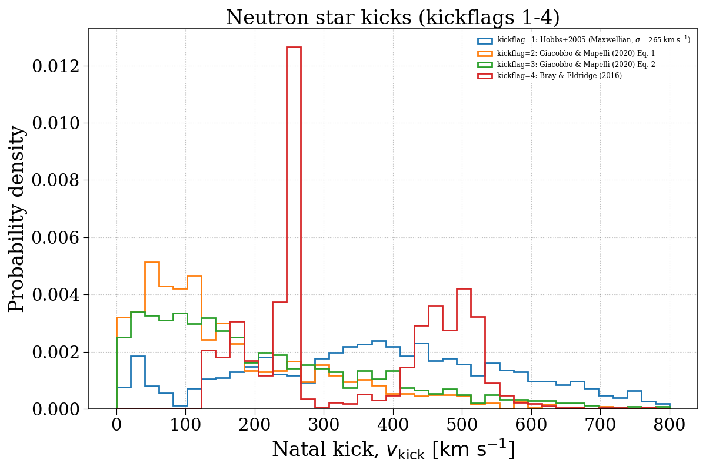
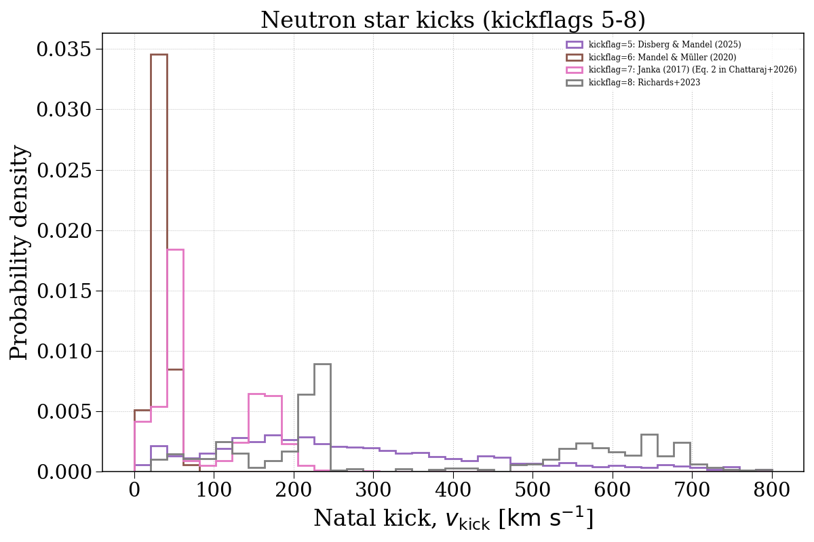
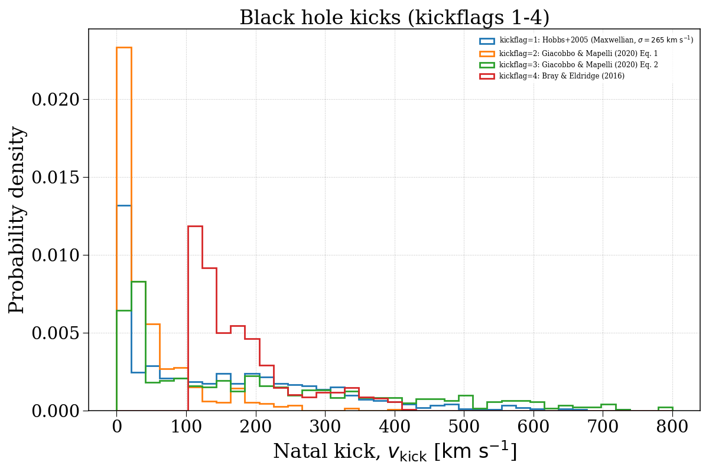
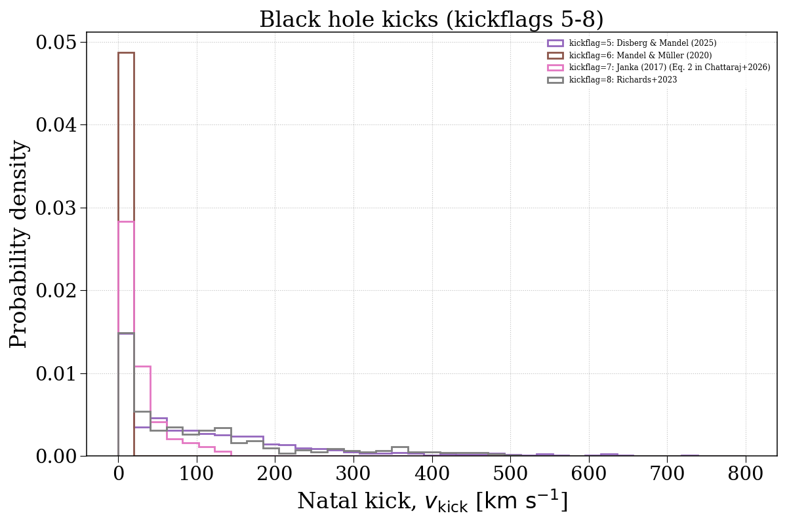

Note
Go to the end to download the full example code.
kickflag¶
This example demonstrates how changing the kickflag parameter can affect the natal kick velocity distributions of compact objects. We separate this into neutron stars and black holes.




Evolving population with kickflag = 1...
Evolving: 0%| | 0/2019 [00:00<?, ?sys/s]
Evolving: 1%|▏ | 30/2019 [00:00<00:08, 241.15sys/s]
Evolving: 3%|▎ | 55/2019 [00:00<00:11, 165.99sys/s]
Evolving: 4%|▎ | 73/2019 [00:00<00:12, 149.88sys/s]
Evolving: 4%|▍ | 89/2019 [00:00<00:13, 143.03sys/s]
Evolving: 5%|▌ | 104/2019 [00:00<00:13, 139.65sys/s]
Evolving: 6%|▌ | 119/2019 [00:00<00:14, 135.38sys/s]
Evolving: 7%|▋ | 133/2019 [00:00<00:13, 135.18sys/s]
Evolving: 7%|▋ | 148/2019 [00:01<00:14, 133.25sys/s]
Evolving: 8%|▊ | 163/2019 [00:01<00:20, 92.77sys/s]
Evolving: 10%|▉ | 194/2019 [00:01<00:13, 136.37sys/s]
Evolving: 10%|█ | 211/2019 [00:01<00:16, 109.35sys/s]
Evolving: 11%|█▏ | 228/2019 [00:01<00:14, 121.12sys/s]
Evolving: 12%|█▏ | 243/2019 [00:01<00:14, 124.29sys/s]
Evolving: 13%|█▎ | 258/2019 [00:02<00:18, 96.14sys/s]
Evolving: 13%|█▎ | 270/2019 [00:02<00:17, 100.73sys/s]
Evolving: 14%|█▍ | 282/2019 [00:02<00:22, 77.16sys/s]
Evolving: 15%|█▌ | 306/2019 [00:02<00:18, 91.13sys/s]
Evolving: 16%|█▋ | 332/2019 [00:02<00:14, 114.21sys/s]
Evolving: 17%|█▋ | 346/2019 [00:02<00:14, 115.56sys/s]
Evolving: 18%|█▊ | 362/2019 [00:03<00:13, 121.81sys/s]
Evolving: 19%|█▊ | 377/2019 [00:03<00:12, 127.04sys/s]
Evolving: 19%|█▉ | 391/2019 [00:03<00:13, 119.81sys/s]
Evolving: 20%|██ | 404/2019 [00:03<00:13, 117.00sys/s]
Evolving: 21%|██ | 417/2019 [00:03<00:13, 116.56sys/s]
Evolving: 21%|██▏ | 434/2019 [00:03<00:12, 126.43sys/s]
Evolving: 22%|██▏ | 447/2019 [00:03<00:12, 124.67sys/s]
Evolving: 23%|██▎ | 461/2019 [00:03<00:12, 127.09sys/s]
Evolving: 24%|██▎ | 476/2019 [00:03<00:11, 128.72sys/s]
Evolving: 24%|██▍ | 489/2019 [00:04<00:12, 127.06sys/s]
Evolving: 25%|██▍ | 502/2019 [00:04<00:16, 90.75sys/s]
Evolving: 26%|██▌ | 523/2019 [00:04<00:13, 113.45sys/s]
Evolving: 27%|██▋ | 542/2019 [00:04<00:11, 129.87sys/s]
Evolving: 28%|██▊ | 557/2019 [00:04<00:11, 125.95sys/s]
Evolving: 28%|██▊ | 573/2019 [00:04<00:11, 128.55sys/s]
Evolving: 29%|██▉ | 587/2019 [00:04<00:11, 126.52sys/s]
Evolving: 30%|██▉ | 601/2019 [00:05<00:11, 123.44sys/s]
Evolving: 30%|███ | 614/2019 [00:05<00:13, 100.77sys/s]
Evolving: 31%|███▏ | 632/2019 [00:05<00:12, 114.09sys/s]
Evolving: 32%|███▏ | 645/2019 [00:05<00:12, 112.57sys/s]
Evolving: 33%|███▎ | 660/2019 [00:05<00:11, 121.08sys/s]
Evolving: 33%|███▎ | 676/2019 [00:05<00:10, 130.64sys/s]
Evolving: 34%|███▍ | 690/2019 [00:05<00:12, 103.76sys/s]
Evolving: 35%|███▍ | 705/2019 [00:06<00:13, 97.32sys/s]
Evolving: 36%|███▌ | 727/2019 [00:06<00:10, 122.86sys/s]
Evolving: 37%|███▋ | 742/2019 [00:06<00:09, 127.86sys/s]
Evolving: 37%|███▋ | 756/2019 [00:06<00:11, 111.76sys/s]
Evolving: 38%|███▊ | 775/2019 [00:06<00:09, 129.40sys/s]
Evolving: 39%|███▉ | 790/2019 [00:06<00:09, 129.55sys/s]
Evolving: 40%|███▉ | 804/2019 [00:06<00:11, 103.15sys/s]
Evolving: 40%|████ | 816/2019 [00:07<00:12, 92.56sys/s]
Evolving: 41%|████ | 828/2019 [00:07<00:14, 81.14sys/s]
Evolving: 42%|████▏ | 858/2019 [00:07<00:09, 122.83sys/s]
Evolving: 43%|████▎ | 873/2019 [00:07<00:08, 128.39sys/s]
Evolving: 44%|████▍ | 888/2019 [00:07<00:11, 99.55sys/s]
Evolving: 45%|████▍ | 901/2019 [00:07<00:12, 87.86sys/s]
Evolving: 46%|████▌ | 921/2019 [00:07<00:10, 108.92sys/s]
Evolving: 46%|████▋ | 937/2019 [00:08<00:10, 103.02sys/s]
Evolving: 47%|████▋ | 958/2019 [00:08<00:08, 123.28sys/s]
Evolving: 48%|████▊ | 973/2019 [00:08<00:08, 126.20sys/s]
Evolving: 49%|████▉ | 987/2019 [00:08<00:08, 122.15sys/s]
Evolving: 50%|████▉ | 1001/2019 [00:08<00:10, 100.16sys/s]
Evolving: 50%|█████ | 1018/2019 [00:08<00:11, 83.56sys/s]
Evolving: 52%|█████▏ | 1045/2019 [00:09<00:08, 111.50sys/s]
Evolving: 52%|█████▏ | 1058/2019 [00:09<00:08, 107.74sys/s]
Evolving: 53%|█████▎ | 1075/2019 [00:09<00:08, 111.78sys/s]
Evolving: 54%|█████▍ | 1091/2019 [00:09<00:07, 121.49sys/s]
Evolving: 55%|█████▍ | 1105/2019 [00:09<00:09, 96.56sys/s]
Evolving: 55%|█████▌ | 1118/2019 [00:09<00:08, 103.20sys/s]
Evolving: 56%|█████▋ | 1137/2019 [00:09<00:07, 121.77sys/s]
Evolving: 57%|█████▋ | 1151/2019 [00:10<00:07, 114.12sys/s]
Evolving: 58%|█████▊ | 1168/2019 [00:10<00:07, 109.91sys/s]
Evolving: 58%|█████▊ | 1181/2019 [00:10<00:07, 114.26sys/s]
Evolving: 59%|█████▉ | 1196/2019 [00:10<00:06, 122.70sys/s]
Evolving: 60%|█████▉ | 1209/2019 [00:10<00:06, 121.49sys/s]
Evolving: 61%|██████ | 1224/2019 [00:10<00:06, 124.58sys/s]
Evolving: 61%|██████▏ | 1239/2019 [00:10<00:06, 128.42sys/s]
Evolving: 62%|██████▏ | 1253/2019 [00:10<00:07, 108.36sys/s]
Evolving: 63%|██████▎ | 1265/2019 [00:11<00:06, 110.18sys/s]
Evolving: 63%|██████▎ | 1281/2019 [00:11<00:06, 107.32sys/s]
Evolving: 64%|██████▍ | 1293/2019 [00:11<00:06, 109.25sys/s]
Evolving: 65%|██████▌ | 1313/2019 [00:11<00:05, 131.61sys/s]
Evolving: 66%|██████▌ | 1327/2019 [00:11<00:05, 132.68sys/s]
Evolving: 66%|██████▋ | 1341/2019 [00:11<00:05, 113.89sys/s]
Evolving: 67%|██████▋ | 1359/2019 [00:11<00:07, 92.03sys/s]
Evolving: 68%|██████▊ | 1380/2019 [00:12<00:06, 101.15sys/s]
Evolving: 70%|██████▉ | 1404/2019 [00:12<00:04, 127.04sys/s]
Evolving: 70%|███████ | 1419/2019 [00:12<00:04, 126.66sys/s]
Evolving: 71%|███████ | 1433/2019 [00:12<00:04, 125.03sys/s]
Evolving: 72%|███████▏ | 1447/2019 [00:12<00:04, 126.34sys/s]
Evolving: 72%|███████▏ | 1461/2019 [00:12<00:04, 123.84sys/s]
Evolving: 73%|███████▎ | 1478/2019 [00:12<00:03, 135.68sys/s]
Evolving: 74%|███████▍ | 1493/2019 [00:12<00:03, 132.77sys/s]
Evolving: 75%|███████▍ | 1508/2019 [00:12<00:03, 136.08sys/s]
Evolving: 75%|███████▌ | 1522/2019 [00:13<00:06, 82.05sys/s]
Evolving: 77%|███████▋ | 1546/2019 [00:13<00:04, 95.01sys/s]
Evolving: 78%|███████▊ | 1570/2019 [00:13<00:04, 94.84sys/s]
Evolving: 79%|███████▉ | 1601/2019 [00:13<00:03, 131.71sys/s]
Evolving: 80%|████████ | 1618/2019 [00:14<00:02, 135.46sys/s]
Evolving: 81%|████████ | 1635/2019 [00:14<00:03, 121.39sys/s]
Evolving: 82%|████████▏ | 1653/2019 [00:14<00:02, 129.15sys/s]
Evolving: 83%|████████▎ | 1668/2019 [00:14<00:02, 131.03sys/s]
Evolving: 83%|████████▎ | 1684/2019 [00:14<00:02, 127.76sys/s]
Evolving: 84%|████████▍ | 1698/2019 [00:14<00:03, 105.92sys/s]
Evolving: 85%|████████▍ | 1710/2019 [00:14<00:03, 93.47sys/s]
Evolving: 86%|████████▌ | 1735/2019 [00:15<00:02, 124.37sys/s]
Evolving: 87%|████████▋ | 1750/2019 [00:15<00:02, 95.48sys/s]
Evolving: 88%|████████▊ | 1777/2019 [00:15<00:01, 127.08sys/s]
Evolving: 89%|████████▉ | 1793/2019 [00:15<00:02, 105.58sys/s]
Evolving: 90%|████████▉ | 1814/2019 [00:15<00:01, 124.09sys/s]
Evolving: 91%|█████████ | 1830/2019 [00:15<00:01, 127.91sys/s]
Evolving: 91%|█████████▏| 1845/2019 [00:15<00:01, 124.88sys/s]
Evolving: 92%|█████████▏| 1859/2019 [00:16<00:01, 127.40sys/s]
Evolving: 93%|█████████▎| 1874/2019 [00:16<00:01, 130.53sys/s]
Evolving: 94%|█████████▎| 1888/2019 [00:16<00:01, 106.24sys/s]
Evolving: 94%|█████████▍| 1907/2019 [00:16<00:00, 122.82sys/s]
Evolving: 95%|█████████▌| 1921/2019 [00:16<00:01, 92.23sys/s]
Evolving: 97%|█████████▋| 1949/2019 [00:16<00:00, 129.61sys/s]
Evolving: 97%|█████████▋| 1966/2019 [00:17<00:00, 120.81sys/s]
Evolving: 98%|█████████▊| 1981/2019 [00:17<00:00, 96.73sys/s]
Evolving: 99%|█████████▊| 1993/2019 [00:17<00:00, 87.58sys/s]
Evolving: 100%|██████████| 2019/2019 [00:17<00:00, 115.49sys/s]
[Time taken: 17.8342 seconds]
Evolving population with kickflag = 2...
Evolving: 0%| | 0/2019 [00:00<?, ?sys/s]
Evolving: 0%| | 8/2019 [00:00<00:27, 72.24sys/s]
Evolving: 1%| | 16/2019 [00:00<00:26, 75.32sys/s]
Evolving: 2%|▏ | 35/2019 [00:00<00:16, 119.86sys/s]
Evolving: 2%|▏ | 47/2019 [00:00<00:16, 119.21sys/s]
Evolving: 3%|▎ | 59/2019 [00:00<00:16, 118.64sys/s]
Evolving: 4%|▎ | 71/2019 [00:00<00:17, 114.54sys/s]
Evolving: 4%|▍ | 88/2019 [00:00<00:15, 127.01sys/s]
Evolving: 5%|▌ | 102/2019 [00:00<00:14, 128.02sys/s]
Evolving: 6%|▌ | 116/2019 [00:00<00:15, 125.09sys/s]
Evolving: 6%|▋ | 131/2019 [00:01<00:15, 125.86sys/s]
Evolving: 7%|▋ | 148/2019 [00:01<00:14, 127.56sys/s]
Evolving: 8%|▊ | 163/2019 [00:01<00:19, 93.45sys/s]
Evolving: 10%|▉ | 193/2019 [00:01<00:13, 132.35sys/s]
Evolving: 10%|█ | 209/2019 [00:01<00:16, 107.08sys/s]
Evolving: 11%|█▏ | 229/2019 [00:01<00:14, 124.72sys/s]
Evolving: 12%|█▏ | 244/2019 [00:02<00:13, 127.04sys/s]
Evolving: 13%|█▎ | 259/2019 [00:02<00:17, 98.42sys/s]
Evolving: 13%|█▎ | 271/2019 [00:02<00:18, 94.67sys/s]
Evolving: 14%|█▍ | 282/2019 [00:02<00:23, 74.83sys/s]
Evolving: 15%|█▌ | 306/2019 [00:02<00:19, 87.82sys/s]
Evolving: 17%|█▋ | 337/2019 [00:02<00:13, 127.26sys/s]
Evolving: 17%|█▋ | 353/2019 [00:03<00:13, 124.83sys/s]
Evolving: 18%|█▊ | 368/2019 [00:03<00:13, 126.36sys/s]
Evolving: 19%|█▉ | 383/2019 [00:03<00:13, 117.67sys/s]
Evolving: 20%|█▉ | 400/2019 [00:03<00:14, 114.87sys/s]
Evolving: 21%|██ | 419/2019 [00:03<00:12, 129.43sys/s]
Evolving: 21%|██▏ | 433/2019 [00:03<00:12, 125.07sys/s]
Evolving: 22%|██▏ | 449/2019 [00:03<00:12, 129.84sys/s]
Evolving: 23%|██▎ | 463/2019 [00:04<00:12, 129.35sys/s]
Evolving: 24%|██▎ | 477/2019 [00:04<00:11, 128.97sys/s]
Evolving: 24%|██▍ | 491/2019 [00:04<00:12, 127.21sys/s]
Evolving: 25%|██▍ | 504/2019 [00:04<00:16, 91.99sys/s]
Evolving: 26%|██▌ | 523/2019 [00:04<00:13, 107.92sys/s]
Evolving: 27%|██▋ | 540/2019 [00:04<00:12, 121.07sys/s]
Evolving: 27%|██▋ | 554/2019 [00:04<00:12, 116.43sys/s]
Evolving: 28%|██▊ | 571/2019 [00:04<00:11, 129.25sys/s]
Evolving: 29%|██▉ | 585/2019 [00:05<00:11, 122.46sys/s]
Evolving: 30%|██▉ | 598/2019 [00:05<00:12, 116.51sys/s]
Evolving: 30%|███ | 611/2019 [00:05<00:12, 110.01sys/s]
Evolving: 31%|███ | 623/2019 [00:05<00:12, 108.44sys/s]
Evolving: 32%|███▏ | 641/2019 [00:05<00:11, 122.97sys/s]
Evolving: 32%|███▏ | 654/2019 [00:05<00:11, 119.55sys/s]
Evolving: 33%|███▎ | 668/2019 [00:05<00:12, 111.30sys/s]
Evolving: 34%|███▎ | 680/2019 [00:06<00:15, 84.79sys/s]
Evolving: 35%|███▍ | 705/2019 [00:06<00:11, 112.28sys/s]
Evolving: 36%|███▌ | 718/2019 [00:06<00:11, 114.60sys/s]
Evolving: 36%|███▋ | 734/2019 [00:06<00:10, 118.45sys/s]
Evolving: 37%|███▋ | 752/2019 [00:06<00:09, 130.21sys/s]
Evolving: 38%|███▊ | 766/2019 [00:06<00:09, 126.84sys/s]
Evolving: 39%|███▊ | 780/2019 [00:06<00:09, 128.14sys/s]
Evolving: 39%|███▉ | 794/2019 [00:07<00:15, 81.27sys/s]
Evolving: 40%|████ | 810/2019 [00:07<00:13, 91.06sys/s]
Evolving: 41%|████ | 828/2019 [00:07<00:13, 86.14sys/s]
Evolving: 42%|████▏ | 858/2019 [00:07<00:09, 123.97sys/s]
Evolving: 43%|████▎ | 874/2019 [00:07<00:09, 126.61sys/s]
Evolving: 44%|████▍ | 889/2019 [00:07<00:10, 103.20sys/s]
Evolving: 45%|████▍ | 902/2019 [00:08<00:12, 89.42sys/s]
Evolving: 46%|████▌ | 925/2019 [00:08<00:09, 113.35sys/s]
Evolving: 47%|████▋ | 939/2019 [00:08<00:09, 108.85sys/s]
Evolving: 47%|████▋ | 956/2019 [00:08<00:09, 115.96sys/s]
Evolving: 48%|████▊ | 972/2019 [00:08<00:08, 120.28sys/s]
Evolving: 49%|████▉ | 987/2019 [00:08<00:08, 122.44sys/s]
Evolving: 50%|████▉ | 1000/2019 [00:08<00:10, 96.39sys/s]
Evolving: 50%|█████ | 1018/2019 [00:09<00:11, 84.34sys/s]
Evolving: 52%|█████▏ | 1045/2019 [00:09<00:08, 114.23sys/s]
Evolving: 52%|█████▏ | 1059/2019 [00:09<00:09, 105.42sys/s]
Evolving: 53%|█████▎ | 1075/2019 [00:09<00:08, 111.14sys/s]
Evolving: 54%|█████▍ | 1091/2019 [00:09<00:08, 115.19sys/s]
Evolving: 55%|█████▍ | 1104/2019 [00:09<00:09, 92.84sys/s]
Evolving: 56%|█████▌ | 1125/2019 [00:10<00:07, 115.84sys/s]
Evolving: 56%|█████▋ | 1140/2019 [00:10<00:07, 123.03sys/s]
Evolving: 57%|█████▋ | 1154/2019 [00:10<00:07, 120.72sys/s]
Evolving: 58%|█████▊ | 1168/2019 [00:10<00:08, 105.66sys/s]
Evolving: 59%|█████▉ | 1187/2019 [00:10<00:07, 113.62sys/s]
Evolving: 59%|█████▉ | 1201/2019 [00:10<00:06, 118.21sys/s]
Evolving: 60%|██████ | 1214/2019 [00:10<00:06, 120.45sys/s]
Evolving: 61%|██████ | 1227/2019 [00:10<00:06, 116.85sys/s]
Evolving: 61%|██████▏ | 1240/2019 [00:11<00:08, 87.68sys/s]
Evolving: 63%|██████▎ | 1265/2019 [00:11<00:06, 116.76sys/s]
Evolving: 63%|██████▎ | 1281/2019 [00:11<00:06, 113.82sys/s]
Evolving: 64%|██████▍ | 1301/2019 [00:11<00:05, 131.32sys/s]
Evolving: 65%|██████▌ | 1316/2019 [00:11<00:05, 132.27sys/s]
Evolving: 66%|██████▌ | 1331/2019 [00:11<00:05, 129.35sys/s]
Evolving: 67%|██████▋ | 1345/2019 [00:11<00:05, 122.96sys/s]
Evolving: 67%|██████▋ | 1359/2019 [00:12<00:07, 90.12sys/s]
Evolving: 68%|██████▊ | 1380/2019 [00:12<00:06, 101.72sys/s]
Evolving: 69%|██████▉ | 1400/2019 [00:12<00:05, 121.62sys/s]
Evolving: 70%|███████ | 1415/2019 [00:12<00:04, 127.80sys/s]
Evolving: 71%|███████ | 1430/2019 [00:12<00:05, 114.88sys/s]
Evolving: 72%|███████▏ | 1446/2019 [00:12<00:04, 123.44sys/s]
Evolving: 72%|███████▏ | 1461/2019 [00:12<00:04, 128.12sys/s]
Evolving: 73%|███████▎ | 1477/2019 [00:13<00:04, 131.98sys/s]
Evolving: 74%|███████▍ | 1491/2019 [00:13<00:03, 133.49sys/s]
Evolving: 75%|███████▍ | 1505/2019 [00:13<00:03, 131.61sys/s]
Evolving: 75%|███████▌ | 1519/2019 [00:13<00:03, 126.86sys/s]
Evolving: 76%|███████▌ | 1532/2019 [00:13<00:05, 91.69sys/s]
Evolving: 77%|███████▋ | 1546/2019 [00:13<00:05, 85.32sys/s]
Evolving: 78%|███████▊ | 1570/2019 [00:14<00:05, 89.33sys/s]
Evolving: 79%|███████▉ | 1600/2019 [00:14<00:03, 122.46sys/s]
Evolving: 80%|████████ | 1618/2019 [00:14<00:02, 133.76sys/s]
Evolving: 81%|████████ | 1634/2019 [00:14<00:03, 116.28sys/s]
Evolving: 82%|████████▏ | 1653/2019 [00:14<00:02, 128.24sys/s]
Evolving: 83%|████████▎ | 1668/2019 [00:14<00:02, 130.64sys/s]
Evolving: 83%|████████▎ | 1684/2019 [00:14<00:02, 135.80sys/s]
Evolving: 84%|████████▍ | 1699/2019 [00:15<00:02, 108.28sys/s]
Evolving: 85%|████████▍ | 1712/2019 [00:15<00:03, 93.55sys/s]
Evolving: 86%|████████▌ | 1737/2019 [00:15<00:02, 125.03sys/s]
Evolving: 87%|████████▋ | 1752/2019 [00:15<00:02, 97.29sys/s]
Evolving: 88%|████████▊ | 1774/2019 [00:15<00:02, 120.93sys/s]
Evolving: 89%|████████▊ | 1789/2019 [00:15<00:02, 99.72sys/s]
Evolving: 90%|████████▉ | 1814/2019 [00:16<00:01, 127.14sys/s]
Evolving: 91%|█████████ | 1830/2019 [00:16<00:01, 130.55sys/s]
Evolving: 91%|█████████▏| 1846/2019 [00:16<00:01, 131.13sys/s]
Evolving: 92%|█████████▏| 1861/2019 [00:16<00:01, 128.99sys/s]
Evolving: 93%|█████████▎| 1876/2019 [00:16<00:01, 133.18sys/s]
Evolving: 94%|█████████▎| 1891/2019 [00:16<00:01, 113.48sys/s]
Evolving: 94%|█████████▍| 1906/2019 [00:16<00:00, 120.90sys/s]
Evolving: 95%|█████████▌| 1921/2019 [00:16<00:01, 94.86sys/s]
Evolving: 96%|█████████▋| 1948/2019 [00:17<00:00, 130.41sys/s]
Evolving: 97%|█████████▋| 1964/2019 [00:17<00:00, 113.76sys/s]
Evolving: 98%|█████████▊| 1978/2019 [00:17<00:00, 95.88sys/s]
Evolving: 99%|█████████▊| 1991/2019 [00:17<00:00, 86.24sys/s]
Evolving: 100%|██████████| 2019/2019 [00:17<00:00, 113.82sys/s]
[Time taken: 17.9226 seconds]
Evolving population with kickflag = 3...
Evolving: 0%| | 0/2019 [00:00<?, ?sys/s]
Evolving: 0%| | 7/2019 [00:00<00:29, 67.47sys/s]
Evolving: 1%| | 16/2019 [00:00<00:26, 75.79sys/s]
Evolving: 2%|▏ | 35/2019 [00:00<00:17, 111.94sys/s]
Evolving: 3%|▎ | 51/2019 [00:00<00:16, 120.65sys/s]
Evolving: 3%|▎ | 63/2019 [00:00<00:17, 108.90sys/s]
Evolving: 4%|▍ | 83/2019 [00:00<00:15, 121.92sys/s]
Evolving: 5%|▍ | 99/2019 [00:00<00:15, 126.62sys/s]
Evolving: 6%|▌ | 115/2019 [00:00<00:14, 129.56sys/s]
Evolving: 6%|▋ | 131/2019 [00:01<00:14, 134.76sys/s]
Evolving: 7%|▋ | 147/2019 [00:01<00:13, 141.55sys/s]
Evolving: 8%|▊ | 162/2019 [00:01<00:13, 135.74sys/s]
Evolving: 9%|▊ | 176/2019 [00:01<00:16, 114.91sys/s]
Evolving: 10%|▉ | 193/2019 [00:01<00:14, 127.33sys/s]
Evolving: 10%|█ | 207/2019 [00:01<00:19, 94.43sys/s]
Evolving: 11%|█▏ | 230/2019 [00:01<00:14, 122.80sys/s]
Evolving: 12%|█▏ | 245/2019 [00:02<00:13, 127.90sys/s]
Evolving: 13%|█▎ | 260/2019 [00:02<00:17, 98.81sys/s]
Evolving: 14%|█▎ | 273/2019 [00:02<00:17, 102.15sys/s]
Evolving: 14%|█▍ | 285/2019 [00:02<00:23, 75.08sys/s]
Evolving: 15%|█▌ | 306/2019 [00:02<00:19, 88.22sys/s]
Evolving: 17%|█▋ | 334/2019 [00:02<00:13, 122.39sys/s]
Evolving: 17%|█▋ | 349/2019 [00:03<00:13, 121.97sys/s]
Evolving: 18%|█▊ | 365/2019 [00:03<00:12, 128.99sys/s]
Evolving: 19%|█▉ | 380/2019 [00:03<00:14, 114.54sys/s]
Evolving: 20%|█▉ | 400/2019 [00:03<00:13, 117.10sys/s]
Evolving: 21%|██ | 416/2019 [00:03<00:12, 126.36sys/s]
Evolving: 21%|██▏ | 431/2019 [00:03<00:12, 130.17sys/s]
Evolving: 22%|██▏ | 445/2019 [00:03<00:12, 126.87sys/s]
Evolving: 23%|██▎ | 462/2019 [00:03<00:11, 130.54sys/s]
Evolving: 24%|██▎ | 478/2019 [00:04<00:11, 137.03sys/s]
Evolving: 24%|██▍ | 493/2019 [00:04<00:11, 131.27sys/s]
Evolving: 25%|██▌ | 507/2019 [00:04<00:15, 100.16sys/s]
Evolving: 26%|██▌ | 523/2019 [00:04<00:13, 109.19sys/s]
Evolving: 27%|██▋ | 542/2019 [00:04<00:12, 122.17sys/s]
Evolving: 28%|██▊ | 556/2019 [00:04<00:11, 125.81sys/s]
Evolving: 28%|██▊ | 572/2019 [00:04<00:11, 131.15sys/s]
Evolving: 29%|██▉ | 586/2019 [00:04<00:11, 126.94sys/s]
Evolving: 30%|██▉ | 600/2019 [00:05<00:11, 119.68sys/s]
Evolving: 30%|███ | 613/2019 [00:05<00:14, 95.20sys/s]
Evolving: 32%|███▏ | 637/2019 [00:05<00:10, 126.39sys/s]
Evolving: 32%|███▏ | 652/2019 [00:05<00:11, 122.99sys/s]
Evolving: 33%|███▎ | 666/2019 [00:05<00:10, 124.95sys/s]
Evolving: 34%|███▎ | 680/2019 [00:05<00:15, 86.79sys/s]
Evolving: 35%|███▍ | 705/2019 [00:06<00:11, 114.77sys/s]
Evolving: 36%|███▌ | 719/2019 [00:06<00:10, 119.03sys/s]
Evolving: 36%|███▋ | 735/2019 [00:06<00:10, 128.10sys/s]
Evolving: 37%|███▋ | 751/2019 [00:06<00:09, 132.78sys/s]
Evolving: 38%|███▊ | 766/2019 [00:06<00:09, 129.82sys/s]
Evolving: 39%|███▊ | 780/2019 [00:06<00:09, 128.89sys/s]
Evolving: 39%|███▉ | 794/2019 [00:06<00:13, 88.32sys/s]
Evolving: 40%|████ | 810/2019 [00:07<00:13, 91.73sys/s]
Evolving: 41%|████ | 828/2019 [00:07<00:13, 89.18sys/s]
Evolving: 42%|████▏ | 858/2019 [00:07<00:09, 127.54sys/s]
Evolving: 43%|████▎ | 874/2019 [00:07<00:09, 126.39sys/s]
Evolving: 44%|████▍ | 889/2019 [00:07<00:10, 104.67sys/s]
Evolving: 45%|████▍ | 902/2019 [00:07<00:11, 94.35sys/s]
Evolving: 46%|████▌ | 921/2019 [00:08<00:09, 111.26sys/s]
Evolving: 46%|████▋ | 936/2019 [00:08<00:09, 119.02sys/s]
Evolving: 47%|████▋ | 950/2019 [00:08<00:09, 117.65sys/s]
Evolving: 48%|████▊ | 963/2019 [00:08<00:08, 119.62sys/s]
Evolving: 48%|████▊ | 977/2019 [00:08<00:08, 124.68sys/s]
Evolving: 49%|████▉ | 991/2019 [00:08<00:08, 122.84sys/s]
Evolving: 50%|████▉ | 1004/2019 [00:08<00:11, 88.75sys/s]
Evolving: 50%|█████ | 1018/2019 [00:09<00:12, 83.07sys/s]
Evolving: 52%|█████▏ | 1045/2019 [00:09<00:08, 111.78sys/s]
Evolving: 52%|█████▏ | 1058/2019 [00:09<00:08, 107.07sys/s]
Evolving: 53%|█████▎ | 1074/2019 [00:09<00:07, 118.18sys/s]
Evolving: 54%|█████▍ | 1087/2019 [00:09<00:08, 111.37sys/s]
Evolving: 54%|█████▍ | 1099/2019 [00:09<00:10, 86.70sys/s]
Evolving: 55%|█████▌ | 1118/2019 [00:09<00:08, 107.09sys/s]
Evolving: 56%|█████▋ | 1138/2019 [00:09<00:06, 127.95sys/s]
Evolving: 57%|█████▋ | 1153/2019 [00:10<00:07, 118.08sys/s]
Evolving: 58%|█████▊ | 1168/2019 [00:10<00:07, 115.64sys/s]
Evolving: 58%|█████▊ | 1181/2019 [00:10<00:07, 115.50sys/s]
Evolving: 59%|█████▉ | 1194/2019 [00:10<00:06, 118.86sys/s]
Evolving: 60%|█████▉ | 1207/2019 [00:10<00:07, 114.77sys/s]
Evolving: 61%|██████ | 1223/2019 [00:10<00:06, 121.19sys/s]
Evolving: 61%|██████▏ | 1239/2019 [00:10<00:06, 126.52sys/s]
Evolving: 62%|██████▏ | 1252/2019 [00:11<00:07, 108.08sys/s]
Evolving: 63%|██████▎ | 1271/2019 [00:11<00:06, 121.82sys/s]
Evolving: 64%|██████▎ | 1284/2019 [00:11<00:06, 111.13sys/s]
Evolving: 65%|██████▍ | 1303/2019 [00:11<00:05, 127.81sys/s]
Evolving: 65%|██████▌ | 1317/2019 [00:11<00:05, 126.00sys/s]
Evolving: 66%|██████▌ | 1332/2019 [00:11<00:05, 129.85sys/s]
Evolving: 67%|██████▋ | 1346/2019 [00:11<00:05, 126.43sys/s]
Evolving: 67%|██████▋ | 1359/2019 [00:11<00:07, 86.26sys/s]
Evolving: 68%|██████▊ | 1380/2019 [00:12<00:06, 102.19sys/s]
Evolving: 69%|██████▉ | 1401/2019 [00:12<00:05, 119.55sys/s]
Evolving: 70%|███████ | 1415/2019 [00:12<00:04, 120.90sys/s]
Evolving: 71%|███████ | 1429/2019 [00:12<00:05, 117.06sys/s]
Evolving: 72%|███████▏ | 1444/2019 [00:12<00:04, 122.60sys/s]
Evolving: 72%|███████▏ | 1461/2019 [00:12<00:04, 128.64sys/s]
Evolving: 73%|███████▎ | 1477/2019 [00:12<00:04, 131.57sys/s]
Evolving: 74%|███████▍ | 1492/2019 [00:12<00:03, 134.49sys/s]
Evolving: 75%|███████▍ | 1506/2019 [00:13<00:03, 132.48sys/s]
Evolving: 75%|███████▌ | 1520/2019 [00:13<00:04, 122.34sys/s]
Evolving: 76%|███████▌ | 1533/2019 [00:13<00:05, 95.91sys/s]
Evolving: 77%|███████▋ | 1546/2019 [00:13<00:05, 84.93sys/s]
Evolving: 78%|███████▊ | 1570/2019 [00:13<00:05, 88.43sys/s]
Evolving: 79%|███████▉ | 1601/2019 [00:13<00:03, 125.34sys/s]
Evolving: 80%|████████ | 1618/2019 [00:14<00:03, 132.83sys/s]
Evolving: 81%|████████ | 1634/2019 [00:14<00:03, 121.42sys/s]
Evolving: 82%|████████▏ | 1650/2019 [00:14<00:02, 128.77sys/s]
Evolving: 82%|████████▏ | 1665/2019 [00:14<00:02, 131.89sys/s]
Evolving: 83%|████████▎ | 1680/2019 [00:14<00:02, 131.22sys/s]
Evolving: 84%|████████▍ | 1694/2019 [00:14<00:03, 99.84sys/s]
Evolving: 84%|████████▍ | 1706/2019 [00:15<00:03, 86.20sys/s]
Evolving: 86%|████████▌ | 1739/2019 [00:15<00:02, 133.38sys/s]
Evolving: 87%|████████▋ | 1756/2019 [00:15<00:02, 108.62sys/s]
Evolving: 88%|████████▊ | 1776/2019 [00:15<00:01, 124.89sys/s]
Evolving: 89%|████████▉ | 1792/2019 [00:15<00:02, 100.61sys/s]
Evolving: 90%|█████████ | 1820/2019 [00:15<00:01, 127.42sys/s]
Evolving: 91%|█████████ | 1836/2019 [00:15<00:01, 133.39sys/s]
Evolving: 92%|█████████▏| 1852/2019 [00:16<00:01, 131.19sys/s]
Evolving: 92%|█████████▏| 1867/2019 [00:16<00:01, 131.53sys/s]
Evolving: 93%|█████████▎| 1882/2019 [00:16<00:01, 97.52sys/s]
Evolving: 95%|█████████▍| 1911/2019 [00:16<00:00, 131.47sys/s]
Evolving: 95%|█████████▌| 1927/2019 [00:16<00:00, 109.90sys/s]
Evolving: 96%|█████████▋| 1948/2019 [00:16<00:00, 129.06sys/s]
Evolving: 97%|█████████▋| 1964/2019 [00:17<00:00, 117.63sys/s]
Evolving: 98%|█████████▊| 1978/2019 [00:17<00:00, 94.83sys/s]
Evolving: 99%|█████████▊| 1991/2019 [00:17<00:00, 85.50sys/s]
Evolving: 100%|██████████| 2019/2019 [00:17<00:00, 115.30sys/s]
[Time taken: 17.7006 seconds]
Evolving population with kickflag = 4...
Evolving: 0%| | 0/2019 [00:00<?, ?sys/s]
Evolving: 0%| | 4/2019 [00:00<01:05, 30.79sys/s]
Evolving: 1%| | 22/2019 [00:00<00:20, 95.43sys/s]
Evolving: 2%|▏ | 36/2019 [00:00<00:18, 109.78sys/s]
Evolving: 3%|▎ | 54/2019 [00:00<00:15, 123.84sys/s]
Evolving: 3%|▎ | 69/2019 [00:00<00:14, 130.84sys/s]
Evolving: 4%|▍ | 83/2019 [00:00<00:15, 125.50sys/s]
Evolving: 5%|▍ | 98/2019 [00:00<00:14, 132.35sys/s]
Evolving: 6%|▌ | 113/2019 [00:00<00:14, 130.80sys/s]
Evolving: 6%|▋ | 131/2019 [00:01<00:13, 138.28sys/s]
Evolving: 7%|▋ | 145/2019 [00:01<00:13, 135.43sys/s]
Evolving: 8%|▊ | 161/2019 [00:01<00:13, 139.21sys/s]
Evolving: 9%|▊ | 175/2019 [00:01<00:16, 109.04sys/s]
Evolving: 10%|▉ | 195/2019 [00:01<00:14, 128.38sys/s]
Evolving: 10%|█ | 209/2019 [00:01<00:16, 108.40sys/s]
Evolving: 11%|█ | 221/2019 [00:01<00:16, 110.54sys/s]
Evolving: 12%|█▏ | 238/2019 [00:01<00:14, 121.37sys/s]
Evolving: 12%|█▏ | 251/2019 [00:02<00:19, 91.37sys/s]
Evolving: 13%|█▎ | 262/2019 [00:02<00:19, 88.68sys/s]
Evolving: 14%|█▍ | 282/2019 [00:02<00:21, 82.46sys/s]
Evolving: 15%|█▌ | 306/2019 [00:02<00:18, 94.26sys/s]
Evolving: 17%|█▋ | 336/2019 [00:02<00:13, 127.45sys/s]
Evolving: 17%|█▋ | 351/2019 [00:03<00:13, 124.28sys/s]
Evolving: 18%|█▊ | 369/2019 [00:03<00:12, 128.63sys/s]
Evolving: 19%|█▉ | 383/2019 [00:03<00:13, 121.27sys/s]
Evolving: 20%|█▉ | 400/2019 [00:03<00:13, 116.51sys/s]
Evolving: 21%|██ | 418/2019 [00:03<00:12, 130.53sys/s]
Evolving: 21%|██▏ | 434/2019 [00:03<00:12, 131.30sys/s]
Evolving: 22%|██▏ | 449/2019 [00:03<00:12, 128.07sys/s]
Evolving: 23%|██▎ | 465/2019 [00:03<00:11, 133.28sys/s]
Evolving: 24%|██▍ | 480/2019 [00:04<00:11, 132.52sys/s]
Evolving: 24%|██▍ | 494/2019 [00:04<00:11, 131.95sys/s]
Evolving: 25%|██▌ | 508/2019 [00:04<00:13, 112.82sys/s]
Evolving: 26%|██▌ | 520/2019 [00:04<00:13, 113.63sys/s]
Evolving: 26%|██▋ | 532/2019 [00:04<00:13, 114.24sys/s]
Evolving: 27%|██▋ | 545/2019 [00:04<00:12, 116.00sys/s]
Evolving: 28%|██▊ | 557/2019 [00:04<00:12, 114.78sys/s]
Evolving: 28%|██▊ | 573/2019 [00:04<00:11, 124.02sys/s]
Evolving: 29%|██▉ | 587/2019 [00:04<00:11, 125.26sys/s]
Evolving: 30%|██▉ | 600/2019 [00:05<00:11, 119.34sys/s]
Evolving: 30%|███ | 613/2019 [00:05<00:14, 96.94sys/s]
Evolving: 31%|███▏ | 632/2019 [00:05<00:11, 116.80sys/s]
Evolving: 32%|███▏ | 645/2019 [00:05<00:12, 110.39sys/s]
Evolving: 33%|███▎ | 664/2019 [00:05<00:10, 128.14sys/s]
Evolving: 34%|███▎ | 678/2019 [00:05<00:10, 130.31sys/s]
Evolving: 34%|███▍ | 692/2019 [00:05<00:12, 107.88sys/s]
Evolving: 35%|███▍ | 705/2019 [00:06<00:12, 103.93sys/s]
Evolving: 36%|███▌ | 721/2019 [00:06<00:11, 116.74sys/s]
Evolving: 36%|███▋ | 736/2019 [00:06<00:10, 124.69sys/s]
Evolving: 37%|███▋ | 750/2019 [00:06<00:10, 122.70sys/s]
Evolving: 38%|███▊ | 763/2019 [00:06<00:10, 118.53sys/s]
Evolving: 38%|███▊ | 776/2019 [00:06<00:10, 116.78sys/s]
Evolving: 39%|███▉ | 792/2019 [00:06<00:09, 124.59sys/s]
Evolving: 40%|███▉ | 805/2019 [00:06<00:11, 107.01sys/s]
Evolving: 40%|████ | 817/2019 [00:07<00:13, 91.82sys/s]
Evolving: 41%|████ | 828/2019 [00:07<00:15, 78.97sys/s]
Evolving: 42%|████▏ | 858/2019 [00:07<00:09, 116.73sys/s]
Evolving: 43%|████▎ | 876/2019 [00:07<00:09, 126.20sys/s]
Evolving: 44%|████▍ | 890/2019 [00:07<00:10, 105.22sys/s]
Evolving: 45%|████▍ | 902/2019 [00:07<00:12, 88.22sys/s]
Evolving: 46%|████▌ | 921/2019 [00:08<00:10, 107.93sys/s]
Evolving: 46%|████▋ | 937/2019 [00:08<00:10, 105.77sys/s]
Evolving: 47%|████▋ | 956/2019 [00:08<00:08, 122.75sys/s]
Evolving: 48%|████▊ | 970/2019 [00:08<00:08, 123.98sys/s]
Evolving: 49%|████▊ | 984/2019 [00:08<00:08, 120.65sys/s]
Evolving: 49%|████▉ | 997/2019 [00:08<00:11, 92.36sys/s]
Evolving: 50%|█████ | 1018/2019 [00:09<00:11, 86.58sys/s]
Evolving: 52%|█████▏ | 1045/2019 [00:09<00:08, 114.82sys/s]
Evolving: 52%|█████▏ | 1059/2019 [00:09<00:08, 110.75sys/s]
Evolving: 53%|█████▎ | 1075/2019 [00:09<00:08, 112.84sys/s]
Evolving: 54%|█████▍ | 1091/2019 [00:09<00:07, 119.30sys/s]
Evolving: 55%|█████▍ | 1104/2019 [00:09<00:09, 97.69sys/s]
Evolving: 55%|█████▌ | 1118/2019 [00:09<00:08, 102.99sys/s]
Evolving: 56%|█████▋ | 1138/2019 [00:09<00:07, 122.22sys/s]
Evolving: 57%|█████▋ | 1152/2019 [00:10<00:07, 119.63sys/s]
Evolving: 58%|█████▊ | 1166/2019 [00:10<00:07, 119.89sys/s]
Evolving: 58%|█████▊ | 1181/2019 [00:10<00:07, 111.30sys/s]
Evolving: 59%|█████▉ | 1193/2019 [00:10<00:07, 112.50sys/s]
Evolving: 60%|█████▉ | 1205/2019 [00:10<00:07, 111.79sys/s]
Evolving: 61%|██████ | 1223/2019 [00:10<00:06, 128.65sys/s]
Evolving: 61%|██████▏ | 1237/2019 [00:10<00:06, 130.06sys/s]
Evolving: 62%|██████▏ | 1251/2019 [00:10<00:07, 104.95sys/s]
Evolving: 63%|██████▎ | 1265/2019 [00:11<00:06, 111.21sys/s]
Evolving: 63%|██████▎ | 1281/2019 [00:11<00:06, 115.28sys/s]
Evolving: 64%|██████▍ | 1299/2019 [00:11<00:05, 124.91sys/s]
Evolving: 65%|██████▌ | 1314/2019 [00:11<00:05, 128.32sys/s]
Evolving: 66%|██████▌ | 1329/2019 [00:11<00:05, 130.57sys/s]
Evolving: 67%|██████▋ | 1343/2019 [00:11<00:05, 117.04sys/s]
Evolving: 67%|██████▋ | 1359/2019 [00:12<00:07, 87.95sys/s]
Evolving: 68%|██████▊ | 1380/2019 [00:12<00:05, 107.19sys/s]
Evolving: 69%|██████▉ | 1398/2019 [00:12<00:05, 116.46sys/s]
Evolving: 70%|███████ | 1414/2019 [00:12<00:05, 120.62sys/s]
Evolving: 71%|███████ | 1428/2019 [00:12<00:05, 114.44sys/s]
Evolving: 72%|███████▏ | 1445/2019 [00:12<00:04, 126.67sys/s]
Evolving: 72%|███████▏ | 1461/2019 [00:12<00:04, 126.33sys/s]
Evolving: 73%|███████▎ | 1478/2019 [00:12<00:04, 134.06sys/s]
Evolving: 74%|███████▍ | 1492/2019 [00:12<00:03, 132.44sys/s]
Evolving: 75%|███████▍ | 1507/2019 [00:13<00:03, 133.94sys/s]
Evolving: 75%|███████▌ | 1521/2019 [00:13<00:03, 128.62sys/s]
Evolving: 76%|███████▌ | 1535/2019 [00:13<00:04, 112.70sys/s]
Evolving: 77%|███████▋ | 1547/2019 [00:13<00:05, 86.97sys/s]
Evolving: 78%|███████▊ | 1570/2019 [00:13<00:05, 83.07sys/s]
Evolving: 79%|███████▉ | 1605/2019 [00:13<00:03, 129.44sys/s]
Evolving: 80%|████████ | 1622/2019 [00:14<00:03, 126.42sys/s]
Evolving: 81%|████████ | 1638/2019 [00:14<00:02, 129.26sys/s]
Evolving: 82%|████████▏ | 1653/2019 [00:14<00:02, 126.99sys/s]
Evolving: 83%|████████▎ | 1668/2019 [00:14<00:02, 124.02sys/s]
Evolving: 84%|████████▎ | 1687/2019 [00:14<00:02, 134.85sys/s]
Evolving: 84%|████████▍ | 1702/2019 [00:14<00:02, 116.40sys/s]
Evolving: 85%|████████▍ | 1715/2019 [00:14<00:03, 99.31sys/s]
Evolving: 86%|████████▌ | 1738/2019 [00:15<00:02, 126.03sys/s]
Evolving: 87%|████████▋ | 1753/2019 [00:15<00:02, 96.64sys/s]
Evolving: 88%|████████▊ | 1777/2019 [00:15<00:01, 121.92sys/s]
Evolving: 89%|████████▉ | 1792/2019 [00:15<00:02, 104.52sys/s]
Evolving: 90%|████████▉ | 1814/2019 [00:15<00:01, 125.33sys/s]
Evolving: 91%|█████████ | 1829/2019 [00:15<00:01, 127.89sys/s]
Evolving: 91%|█████████▏| 1844/2019 [00:15<00:01, 133.03sys/s]
Evolving: 92%|█████████▏| 1859/2019 [00:16<00:01, 124.50sys/s]
Evolving: 93%|█████████▎| 1877/2019 [00:16<00:01, 97.04sys/s]
Evolving: 94%|█████████▍| 1906/2019 [00:16<00:00, 133.50sys/s]
Evolving: 95%|█████████▌| 1923/2019 [00:16<00:00, 102.44sys/s]
Evolving: 97%|█████████▋| 1951/2019 [00:16<00:00, 121.24sys/s]
Evolving: 98%|█████████▊| 1969/2019 [00:17<00:00, 127.09sys/s]
Evolving: 98%|█████████▊| 1984/2019 [00:17<00:00, 108.97sys/s]
Evolving: 99%|█████████▉| 1997/2019 [00:17<00:00, 91.38sys/s]
Evolving: 100%|██████████| 2019/2019 [00:17<00:00, 115.45sys/s]
[Time taken: 17.6678 seconds]
Evolving population with kickflag = 5...
Evolving: 0%| | 0/2019 [00:00<?, ?sys/s]
Evolving: 0%| | 8/2019 [00:00<00:25, 79.52sys/s]
Evolving: 1%| | 16/2019 [00:00<00:27, 72.51sys/s]
Evolving: 2%|▏ | 33/2019 [00:00<00:17, 113.07sys/s]
Evolving: 2%|▏ | 48/2019 [00:00<00:15, 124.47sys/s]
Evolving: 3%|▎ | 62/2019 [00:00<00:18, 105.13sys/s]
Evolving: 4%|▍ | 83/2019 [00:00<00:14, 130.82sys/s]
Evolving: 5%|▍ | 98/2019 [00:00<00:14, 136.24sys/s]
Evolving: 6%|▌ | 113/2019 [00:00<00:13, 138.78sys/s]
Evolving: 6%|▋ | 128/2019 [00:01<00:14, 131.69sys/s]
Evolving: 7%|▋ | 143/2019 [00:01<00:14, 133.30sys/s]
Evolving: 8%|▊ | 159/2019 [00:01<00:13, 134.32sys/s]
Evolving: 9%|▊ | 173/2019 [00:01<00:17, 104.72sys/s]
Evolving: 10%|▉ | 195/2019 [00:01<00:14, 128.66sys/s]
Evolving: 10%|█ | 210/2019 [00:01<00:16, 108.40sys/s]
Evolving: 11%|█ | 223/2019 [00:01<00:16, 110.29sys/s]
Evolving: 12%|█▏ | 242/2019 [00:01<00:14, 126.64sys/s]
Evolving: 13%|█▎ | 256/2019 [00:02<00:19, 91.07sys/s]
Evolving: 14%|█▎ | 276/2019 [00:02<00:15, 109.72sys/s]
Evolving: 14%|█▍ | 290/2019 [00:02<00:19, 89.53sys/s]
Evolving: 15%|█▌ | 306/2019 [00:02<00:20, 84.92sys/s]
Evolving: 17%|█▋ | 337/2019 [00:02<00:13, 123.60sys/s]
Evolving: 17%|█▋ | 353/2019 [00:03<00:13, 123.27sys/s]
Evolving: 18%|█▊ | 368/2019 [00:03<00:12, 127.92sys/s]
Evolving: 19%|█▉ | 383/2019 [00:03<00:14, 114.17sys/s]
Evolving: 20%|█▉ | 400/2019 [00:03<00:14, 112.87sys/s]
Evolving: 21%|██ | 419/2019 [00:03<00:12, 127.29sys/s]
Evolving: 21%|██▏ | 433/2019 [00:03<00:12, 128.89sys/s]
Evolving: 22%|██▏ | 447/2019 [00:03<00:12, 129.17sys/s]
Evolving: 23%|██▎ | 461/2019 [00:04<00:17, 88.71sys/s]
Evolving: 24%|██▎ | 477/2019 [00:04<00:15, 102.77sys/s]
Evolving: 24%|██▍ | 490/2019 [00:04<00:15, 98.54sys/s]
Evolving: 25%|██▍ | 502/2019 [00:04<00:18, 82.21sys/s]
Evolving: 26%|██▌ | 523/2019 [00:04<00:14, 104.42sys/s]
Evolving: 27%|██▋ | 541/2019 [00:04<00:12, 116.80sys/s]
Evolving: 27%|██▋ | 555/2019 [00:04<00:12, 121.02sys/s]
Evolving: 28%|██▊ | 571/2019 [00:05<00:11, 125.92sys/s]
Evolving: 29%|██▉ | 585/2019 [00:05<00:12, 118.93sys/s]
Evolving: 30%|██▉ | 598/2019 [00:05<00:12, 115.37sys/s]
Evolving: 30%|███ | 610/2019 [00:05<00:13, 107.88sys/s]
Evolving: 31%|███ | 624/2019 [00:05<00:12, 115.85sys/s]
Evolving: 32%|███▏ | 638/2019 [00:05<00:11, 121.18sys/s]
Evolving: 32%|███▏ | 651/2019 [00:05<00:11, 121.30sys/s]
Evolving: 33%|███▎ | 664/2019 [00:05<00:11, 120.11sys/s]
Evolving: 34%|███▎ | 677/2019 [00:05<00:10, 122.20sys/s]
Evolving: 34%|███▍ | 690/2019 [00:06<00:13, 102.00sys/s]
Evolving: 35%|███▍ | 705/2019 [00:06<00:13, 99.96sys/s]
Evolving: 35%|███▌ | 716/2019 [00:06<00:12, 102.19sys/s]
Evolving: 37%|███▋ | 738/2019 [00:06<00:09, 130.18sys/s]
Evolving: 37%|███▋ | 752/2019 [00:06<00:09, 130.70sys/s]
Evolving: 38%|███▊ | 766/2019 [00:06<00:09, 126.06sys/s]
Evolving: 39%|███▊ | 780/2019 [00:06<00:09, 128.84sys/s]
Evolving: 39%|███▉ | 794/2019 [00:07<00:14, 86.40sys/s]
Evolving: 40%|████ | 810/2019 [00:07<00:13, 87.38sys/s]
Evolving: 41%|████ | 828/2019 [00:07<00:13, 85.60sys/s]
Evolving: 42%|████▏ | 850/2019 [00:07<00:10, 110.80sys/s]
Evolving: 43%|████▎ | 873/2019 [00:07<00:08, 131.65sys/s]
Evolving: 44%|████▍ | 889/2019 [00:07<00:10, 104.85sys/s]
Evolving: 45%|████▍ | 902/2019 [00:08<00:11, 94.65sys/s]
Evolving: 46%|████▌ | 923/2019 [00:08<00:09, 115.69sys/s]
Evolving: 46%|████▋ | 937/2019 [00:08<00:10, 105.58sys/s]
Evolving: 47%|████▋ | 959/2019 [00:08<00:08, 118.50sys/s]
Evolving: 48%|████▊ | 976/2019 [00:08<00:08, 128.09sys/s]
Evolving: 49%|████▉ | 991/2019 [00:08<00:07, 130.99sys/s]
Evolving: 50%|████▉ | 1005/2019 [00:09<00:11, 91.56sys/s]
Evolving: 50%|█████ | 1018/2019 [00:09<00:12, 83.26sys/s]
Evolving: 52%|█████▏ | 1045/2019 [00:09<00:08, 115.55sys/s]
Evolving: 52%|█████▏ | 1059/2019 [00:09<00:08, 111.23sys/s]
Evolving: 53%|█████▎ | 1075/2019 [00:09<00:08, 112.61sys/s]
Evolving: 54%|█████▍ | 1091/2019 [00:09<00:07, 120.07sys/s]
Evolving: 55%|█████▍ | 1104/2019 [00:09<00:09, 98.24sys/s]
Evolving: 55%|█████▌ | 1118/2019 [00:10<00:09, 99.83sys/s]
Evolving: 56%|█████▋ | 1139/2019 [00:10<00:07, 121.97sys/s]
Evolving: 57%|█████▋ | 1153/2019 [00:10<00:06, 123.83sys/s]
Evolving: 58%|█████▊ | 1168/2019 [00:10<00:07, 115.63sys/s]
Evolving: 58%|█████▊ | 1181/2019 [00:10<00:07, 115.38sys/s]
Evolving: 59%|█████▉ | 1194/2019 [00:10<00:07, 112.04sys/s]
Evolving: 60%|█████▉ | 1206/2019 [00:10<00:07, 112.70sys/s]
Evolving: 61%|██████ | 1225/2019 [00:10<00:06, 132.15sys/s]
Evolving: 61%|██████▏ | 1239/2019 [00:11<00:06, 125.11sys/s]
Evolving: 62%|██████▏ | 1252/2019 [00:11<00:07, 108.59sys/s]
Evolving: 63%|██████▎ | 1265/2019 [00:11<00:06, 109.53sys/s]
Evolving: 63%|██████▎ | 1281/2019 [00:11<00:06, 110.05sys/s]
Evolving: 64%|██████▍ | 1293/2019 [00:11<00:06, 110.18sys/s]
Evolving: 65%|██████▌ | 1314/2019 [00:11<00:05, 128.80sys/s]
Evolving: 66%|██████▌ | 1330/2019 [00:11<00:05, 134.93sys/s]
Evolving: 67%|██████▋ | 1344/2019 [00:11<00:05, 126.79sys/s]
Evolving: 67%|██████▋ | 1359/2019 [00:12<00:07, 87.22sys/s]
Evolving: 68%|██████▊ | 1380/2019 [00:12<00:05, 107.41sys/s]
Evolving: 69%|██████▉ | 1397/2019 [00:12<00:05, 119.10sys/s]
Evolving: 70%|███████ | 1414/2019 [00:12<00:04, 127.63sys/s]
Evolving: 71%|███████ | 1429/2019 [00:12<00:05, 117.99sys/s]
Evolving: 72%|███████▏ | 1447/2019 [00:12<00:04, 131.95sys/s]
Evolving: 72%|███████▏ | 1462/2019 [00:12<00:04, 126.68sys/s]
Evolving: 73%|███████▎ | 1477/2019 [00:13<00:04, 131.54sys/s]
Evolving: 74%|███████▍ | 1491/2019 [00:13<00:03, 133.11sys/s]
Evolving: 75%|███████▍ | 1505/2019 [00:13<00:03, 131.13sys/s]
Evolving: 75%|███████▌ | 1519/2019 [00:13<00:03, 127.13sys/s]
Evolving: 76%|███████▌ | 1532/2019 [00:13<00:05, 91.79sys/s]
Evolving: 77%|███████▋ | 1546/2019 [00:13<00:05, 86.25sys/s]
Evolving: 78%|███████▊ | 1570/2019 [00:14<00:05, 87.19sys/s]
Evolving: 79%|███████▉ | 1603/2019 [00:14<00:03, 129.00sys/s]
Evolving: 80%|████████ | 1619/2019 [00:14<00:03, 126.22sys/s]
Evolving: 81%|████████ | 1634/2019 [00:14<00:03, 122.88sys/s]
Evolving: 82%|████████▏ | 1651/2019 [00:14<00:02, 131.89sys/s]
Evolving: 83%|████████▎ | 1667/2019 [00:14<00:02, 131.98sys/s]
Evolving: 83%|████████▎ | 1684/2019 [00:14<00:02, 135.27sys/s]
Evolving: 84%|████████▍ | 1699/2019 [00:15<00:03, 103.66sys/s]
Evolving: 85%|████████▍ | 1711/2019 [00:15<00:03, 97.21sys/s]
Evolving: 86%|████████▌ | 1736/2019 [00:15<00:02, 128.71sys/s]
Evolving: 87%|████████▋ | 1751/2019 [00:15<00:02, 97.41sys/s]
Evolving: 88%|████████▊ | 1777/2019 [00:15<00:01, 127.55sys/s]
Evolving: 89%|████████▉ | 1793/2019 [00:15<00:02, 107.26sys/s]
Evolving: 90%|████████▉ | 1817/2019 [00:15<00:01, 127.63sys/s]
Evolving: 91%|█████████ | 1833/2019 [00:16<00:01, 131.68sys/s]
Evolving: 92%|█████████▏| 1848/2019 [00:16<00:01, 132.36sys/s]
Evolving: 92%|█████████▏| 1863/2019 [00:16<00:01, 130.95sys/s]
Evolving: 93%|█████████▎| 1877/2019 [00:16<00:01, 94.12sys/s]
Evolving: 94%|█████████▍| 1907/2019 [00:16<00:00, 133.74sys/s]
Evolving: 95%|█████████▌| 1924/2019 [00:16<00:00, 104.13sys/s]
Evolving: 97%|█████████▋| 1951/2019 [00:17<00:00, 120.78sys/s]
Evolving: 97%|█████████▋| 1968/2019 [00:17<00:00, 129.52sys/s]
Evolving: 98%|█████████▊| 1983/2019 [00:17<00:00, 106.14sys/s]
Evolving: 99%|█████████▉| 1996/2019 [00:17<00:00, 92.25sys/s]
Evolving: 100%|██████████| 2019/2019 [00:17<00:00, 114.08sys/s]
[Time taken: 17.8835 seconds]
Evolving population with kickflag = 6...
Evolving: 0%| | 0/2019 [00:00<?, ?sys/s]
Evolving: 0%| | 4/2019 [00:00<00:53, 37.74sys/s]
Evolving: 1%| | 16/2019 [00:00<00:24, 80.60sys/s]
Evolving: 2%|▏ | 35/2019 [00:00<00:16, 123.37sys/s]
Evolving: 2%|▏ | 48/2019 [00:00<00:16, 119.70sys/s]
Evolving: 3%|▎ | 62/2019 [00:00<00:17, 111.59sys/s]
Evolving: 4%|▍ | 81/2019 [00:00<00:14, 134.21sys/s]
Evolving: 5%|▍ | 95/2019 [00:00<00:14, 128.82sys/s]
Evolving: 5%|▌ | 109/2019 [00:00<00:14, 127.69sys/s]
Evolving: 6%|▌ | 124/2019 [00:01<00:14, 133.79sys/s]
Evolving: 7%|▋ | 139/2019 [00:01<00:13, 136.89sys/s]
Evolving: 8%|▊ | 153/2019 [00:01<00:13, 136.35sys/s]
Evolving: 8%|▊ | 167/2019 [00:01<00:19, 92.70sys/s]
Evolving: 10%|▉ | 197/2019 [00:01<00:13, 136.07sys/s]
Evolving: 11%|█ | 214/2019 [00:01<00:15, 119.12sys/s]
Evolving: 11%|█▏ | 229/2019 [00:01<00:14, 120.23sys/s]
Evolving: 12%|█▏ | 244/2019 [00:02<00:14, 121.99sys/s]
Evolving: 13%|█▎ | 258/2019 [00:02<00:19, 91.96sys/s]
Evolving: 14%|█▎ | 276/2019 [00:02<00:16, 107.51sys/s]
Evolving: 14%|█▍ | 289/2019 [00:02<00:21, 82.27sys/s]
Evolving: 15%|█▌ | 306/2019 [00:02<00:20, 84.02sys/s]
Evolving: 17%|█▋ | 337/2019 [00:02<00:13, 123.58sys/s]
Evolving: 17%|█▋ | 353/2019 [00:03<00:13, 124.20sys/s]
Evolving: 18%|█▊ | 368/2019 [00:03<00:13, 124.37sys/s]
Evolving: 19%|█▉ | 382/2019 [00:03<00:13, 117.01sys/s]
Evolving: 20%|█▉ | 400/2019 [00:03<00:14, 109.52sys/s]
Evolving: 21%|██ | 420/2019 [00:03<00:12, 127.63sys/s]
Evolving: 22%|██▏ | 435/2019 [00:03<00:12, 128.64sys/s]
Evolving: 22%|██▏ | 449/2019 [00:03<00:12, 130.32sys/s]
Evolving: 23%|██▎ | 463/2019 [00:03<00:11, 130.28sys/s]
Evolving: 24%|██▎ | 479/2019 [00:04<00:11, 135.18sys/s]
Evolving: 24%|██▍ | 493/2019 [00:04<00:11, 129.48sys/s]
Evolving: 25%|██▌ | 507/2019 [00:04<00:15, 97.68sys/s]
Evolving: 26%|██▌ | 523/2019 [00:04<00:13, 108.93sys/s]
Evolving: 27%|██▋ | 539/2019 [00:04<00:12, 119.79sys/s]
Evolving: 27%|██▋ | 554/2019 [00:04<00:11, 124.15sys/s]
Evolving: 28%|██▊ | 569/2019 [00:04<00:11, 124.28sys/s]
Evolving: 29%|██▉ | 582/2019 [00:04<00:11, 120.16sys/s]
Evolving: 29%|██▉ | 595/2019 [00:05<00:12, 110.46sys/s]
Evolving: 30%|███ | 609/2019 [00:05<00:12, 112.51sys/s]
Evolving: 31%|███ | 623/2019 [00:05<00:11, 119.21sys/s]
Evolving: 32%|███▏ | 637/2019 [00:05<00:11, 117.80sys/s]
Evolving: 32%|███▏ | 649/2019 [00:05<00:11, 117.49sys/s]
Evolving: 33%|███▎ | 666/2019 [00:05<00:10, 124.75sys/s]
Evolving: 34%|███▎ | 680/2019 [00:05<00:15, 86.95sys/s]
Evolving: 35%|███▍ | 705/2019 [00:06<00:11, 111.66sys/s]
Evolving: 36%|███▌ | 724/2019 [00:06<00:10, 124.06sys/s]
Evolving: 37%|███▋ | 738/2019 [00:06<00:10, 124.37sys/s]
Evolving: 37%|███▋ | 754/2019 [00:06<00:09, 130.57sys/s]
Evolving: 38%|███▊ | 768/2019 [00:06<00:10, 124.07sys/s]
Evolving: 39%|███▊ | 781/2019 [00:06<00:09, 125.14sys/s]
Evolving: 39%|███▉ | 794/2019 [00:06<00:14, 87.31sys/s]
Evolving: 40%|████ | 810/2019 [00:07<00:13, 88.90sys/s]
Evolving: 41%|████ | 828/2019 [00:07<00:13, 89.00sys/s]
Evolving: 42%|████▏ | 857/2019 [00:07<00:09, 126.47sys/s]
Evolving: 43%|████▎ | 872/2019 [00:07<00:08, 127.80sys/s]
Evolving: 44%|████▍ | 887/2019 [00:07<00:11, 97.54sys/s]
Evolving: 45%|████▍ | 899/2019 [00:07<00:11, 95.03sys/s]
Evolving: 45%|████▌ | 912/2019 [00:08<00:11, 96.82sys/s]
Evolving: 46%|████▌ | 932/2019 [00:08<00:09, 111.64sys/s]
Evolving: 47%|████▋ | 947/2019 [00:08<00:09, 118.46sys/s]
Evolving: 48%|████▊ | 960/2019 [00:08<00:08, 119.29sys/s]
Evolving: 48%|████▊ | 973/2019 [00:08<00:08, 118.87sys/s]
Evolving: 49%|████▉ | 987/2019 [00:08<00:08, 122.94sys/s]
Evolving: 50%|████▉ | 1000/2019 [00:08<00:10, 93.78sys/s]
Evolving: 50%|█████ | 1018/2019 [00:09<00:12, 83.22sys/s]
Evolving: 52%|█████▏ | 1045/2019 [00:09<00:08, 113.52sys/s]
Evolving: 52%|█████▏ | 1059/2019 [00:09<00:08, 108.00sys/s]
Evolving: 53%|█████▎ | 1075/2019 [00:09<00:08, 110.06sys/s]
Evolving: 54%|█████▍ | 1090/2019 [00:09<00:07, 118.23sys/s]
Evolving: 55%|█████▍ | 1103/2019 [00:09<00:10, 89.80sys/s]
Evolving: 56%|█████▌ | 1126/2019 [00:09<00:07, 115.78sys/s]
Evolving: 56%|█████▋ | 1140/2019 [00:10<00:07, 120.11sys/s]
Evolving: 57%|█████▋ | 1154/2019 [00:10<00:07, 120.15sys/s]
Evolving: 58%|█████▊ | 1168/2019 [00:10<00:07, 108.14sys/s]
Evolving: 58%|█████▊ | 1181/2019 [00:10<00:07, 112.61sys/s]
Evolving: 59%|█████▉ | 1194/2019 [00:10<00:07, 114.73sys/s]
Evolving: 60%|█████▉ | 1207/2019 [00:10<00:06, 117.84sys/s]
Evolving: 61%|██████ | 1223/2019 [00:10<00:06, 122.23sys/s]
Evolving: 61%|██████▏ | 1238/2019 [00:10<00:06, 126.71sys/s]
Evolving: 62%|██████▏ | 1251/2019 [00:11<00:07, 106.31sys/s]
Evolving: 63%|██████▎ | 1265/2019 [00:11<00:07, 107.61sys/s]
Evolving: 63%|██████▎ | 1281/2019 [00:11<00:06, 107.80sys/s]
Evolving: 64%|██████▍ | 1302/2019 [00:11<00:05, 128.23sys/s]
Evolving: 65%|██████▌ | 1316/2019 [00:11<00:05, 131.09sys/s]
Evolving: 66%|██████▌ | 1330/2019 [00:11<00:05, 126.66sys/s]
Evolving: 67%|██████▋ | 1343/2019 [00:11<00:05, 118.04sys/s]
Evolving: 67%|██████▋ | 1359/2019 [00:12<00:07, 88.94sys/s]
Evolving: 68%|██████▊ | 1380/2019 [00:12<00:06, 105.83sys/s]
Evolving: 69%|██████▉ | 1399/2019 [00:12<00:05, 121.65sys/s]
Evolving: 70%|███████ | 1414/2019 [00:12<00:04, 126.06sys/s]
Evolving: 71%|███████ | 1428/2019 [00:12<00:05, 109.63sys/s]
Evolving: 72%|███████▏ | 1449/2019 [00:12<00:04, 127.67sys/s]
Evolving: 72%|███████▏ | 1463/2019 [00:12<00:04, 126.15sys/s]
Evolving: 73%|███████▎ | 1478/2019 [00:12<00:04, 131.24sys/s]
Evolving: 74%|███████▍ | 1492/2019 [00:13<00:03, 131.93sys/s]
Evolving: 75%|███████▍ | 1506/2019 [00:13<00:03, 133.37sys/s]
Evolving: 75%|███████▌ | 1520/2019 [00:13<00:04, 124.01sys/s]
Evolving: 76%|███████▌ | 1533/2019 [00:13<00:05, 93.22sys/s]
Evolving: 77%|███████▋ | 1546/2019 [00:13<00:05, 84.61sys/s]
Evolving: 78%|███████▊ | 1570/2019 [00:13<00:05, 89.56sys/s]
Evolving: 79%|███████▉ | 1600/2019 [00:14<00:03, 127.94sys/s]
Evolving: 80%|████████ | 1616/2019 [00:14<00:03, 126.88sys/s]
Evolving: 81%|████████ | 1631/2019 [00:14<00:03, 115.68sys/s]
Evolving: 82%|████████▏ | 1650/2019 [00:14<00:02, 129.50sys/s]
Evolving: 82%|████████▏ | 1665/2019 [00:14<00:02, 129.66sys/s]
Evolving: 83%|████████▎ | 1679/2019 [00:14<00:02, 131.36sys/s]
Evolving: 84%|████████▍ | 1693/2019 [00:14<00:03, 96.42sys/s]
Evolving: 84%|████████▍ | 1705/2019 [00:15<00:03, 86.96sys/s]
Evolving: 86%|████████▌ | 1736/2019 [00:15<00:02, 130.65sys/s]
Evolving: 87%|████████▋ | 1752/2019 [00:15<00:02, 102.02sys/s]
Evolving: 88%|████████▊ | 1777/2019 [00:15<00:01, 129.83sys/s]
Evolving: 89%|████████▉ | 1794/2019 [00:15<00:02, 109.51sys/s]
Evolving: 90%|█████████ | 1818/2019 [00:15<00:01, 133.48sys/s]
Evolving: 91%|█████████ | 1835/2019 [00:16<00:01, 130.30sys/s]
Evolving: 92%|█████████▏| 1851/2019 [00:16<00:01, 130.75sys/s]
Evolving: 92%|█████████▏| 1866/2019 [00:16<00:01, 130.41sys/s]
Evolving: 93%|█████████▎| 1881/2019 [00:16<00:01, 98.96sys/s]
Evolving: 94%|█████████▍| 1907/2019 [00:16<00:00, 127.94sys/s]
Evolving: 95%|█████████▌| 1923/2019 [00:16<00:00, 102.25sys/s]
Evolving: 96%|█████████▋| 1947/2019 [00:16<00:00, 128.24sys/s]
Evolving: 97%|█████████▋| 1963/2019 [00:17<00:00, 117.72sys/s]
Evolving: 98%|█████████▊| 1977/2019 [00:17<00:00, 89.70sys/s]
Evolving: 99%|█████████▊| 1991/2019 [00:17<00:00, 89.55sys/s]
Evolving: 100%|██████████| 2019/2019 [00:17<00:00, 114.51sys/s]
[Time taken: 17.8154 seconds]
Evolving population with kickflag = 7...
Evolving: 0%| | 0/2019 [00:00<?, ?sys/s]
Evolving: 0%| | 8/2019 [00:00<00:27, 73.05sys/s]
Evolving: 1%| | 16/2019 [00:00<00:26, 75.86sys/s]
Evolving: 2%|▏ | 34/2019 [00:00<00:16, 121.51sys/s]
Evolving: 2%|▏ | 48/2019 [00:00<00:15, 123.77sys/s]
Evolving: 3%|▎ | 62/2019 [00:00<00:17, 108.96sys/s]
Evolving: 4%|▍ | 80/2019 [00:00<00:15, 127.32sys/s]
Evolving: 5%|▍ | 96/2019 [00:00<00:14, 134.17sys/s]
Evolving: 5%|▌ | 110/2019 [00:00<00:14, 132.77sys/s]
Evolving: 6%|▌ | 124/2019 [00:01<00:14, 131.17sys/s]
Evolving: 7%|▋ | 140/2019 [00:01<00:13, 139.19sys/s]
Evolving: 8%|▊ | 155/2019 [00:01<00:13, 137.65sys/s]
Evolving: 8%|▊ | 169/2019 [00:01<00:18, 100.56sys/s]
Evolving: 10%|▉ | 193/2019 [00:01<00:14, 129.78sys/s]
Evolving: 10%|█ | 208/2019 [00:01<00:17, 104.86sys/s]
Evolving: 11%|█▏ | 228/2019 [00:01<00:14, 123.95sys/s]
Evolving: 12%|█▏ | 243/2019 [00:01<00:13, 127.55sys/s]
Evolving: 13%|█▎ | 258/2019 [00:02<00:18, 94.68sys/s]
Evolving: 13%|█▎ | 270/2019 [00:02<00:18, 94.81sys/s]
Evolving: 14%|█▍ | 282/2019 [00:02<00:22, 77.28sys/s]
Evolving: 15%|█▌ | 306/2019 [00:02<00:19, 89.27sys/s]
Evolving: 17%|█▋ | 337/2019 [00:02<00:13, 128.40sys/s]
Evolving: 17%|█▋ | 353/2019 [00:03<00:13, 125.40sys/s]
Evolving: 18%|█▊ | 368/2019 [00:03<00:13, 125.15sys/s]
Evolving: 19%|█▉ | 382/2019 [00:03<00:13, 121.77sys/s]
Evolving: 20%|█▉ | 399/2019 [00:03<00:12, 131.18sys/s]
Evolving: 20%|██ | 413/2019 [00:03<00:12, 123.59sys/s]
Evolving: 21%|██ | 428/2019 [00:03<00:12, 125.79sys/s]
Evolving: 22%|██▏ | 444/2019 [00:03<00:13, 117.20sys/s]
Evolving: 23%|██▎ | 463/2019 [00:03<00:11, 134.72sys/s]
Evolving: 24%|██▎ | 478/2019 [00:04<00:11, 131.83sys/s]
Evolving: 24%|██▍ | 492/2019 [00:04<00:11, 132.80sys/s]
Evolving: 25%|██▌ | 506/2019 [00:04<00:15, 96.63sys/s]
Evolving: 26%|██▌ | 523/2019 [00:04<00:13, 110.19sys/s]
Evolving: 27%|██▋ | 541/2019 [00:04<00:11, 123.70sys/s]
Evolving: 27%|██▋ | 555/2019 [00:04<00:11, 124.69sys/s]
Evolving: 28%|██▊ | 569/2019 [00:04<00:11, 126.85sys/s]
Evolving: 29%|██▉ | 583/2019 [00:04<00:11, 124.11sys/s]
Evolving: 30%|██▉ | 596/2019 [00:05<00:12, 111.78sys/s]
Evolving: 30%|███ | 609/2019 [00:05<00:12, 108.98sys/s]
Evolving: 31%|███ | 624/2019 [00:05<00:11, 117.30sys/s]
Evolving: 32%|███▏ | 638/2019 [00:05<00:11, 118.34sys/s]
Evolving: 32%|███▏ | 651/2019 [00:05<00:11, 117.98sys/s]
Evolving: 33%|███▎ | 664/2019 [00:05<00:11, 117.77sys/s]
Evolving: 34%|███▎ | 680/2019 [00:05<00:16, 81.43sys/s]
Evolving: 35%|███▍ | 705/2019 [00:06<00:11, 112.58sys/s]
Evolving: 36%|███▌ | 719/2019 [00:06<00:11, 113.91sys/s]
Evolving: 37%|███▋ | 737/2019 [00:06<00:10, 127.35sys/s]
Evolving: 37%|███▋ | 752/2019 [00:06<00:09, 130.45sys/s]
Evolving: 38%|███▊ | 767/2019 [00:06<00:09, 131.09sys/s]
Evolving: 39%|███▊ | 781/2019 [00:06<00:09, 131.15sys/s]
Evolving: 39%|███▉ | 795/2019 [00:06<00:13, 88.20sys/s]
Evolving: 40%|████ | 810/2019 [00:07<00:13, 90.77sys/s]
Evolving: 41%|████ | 828/2019 [00:07<00:13, 85.77sys/s]
Evolving: 43%|████▎ | 859/2019 [00:07<00:09, 127.37sys/s]
Evolving: 43%|████▎ | 875/2019 [00:07<00:08, 130.29sys/s]
Evolving: 44%|████▍ | 891/2019 [00:07<00:10, 106.78sys/s]
Evolving: 45%|████▍ | 904/2019 [00:07<00:11, 94.82sys/s]
Evolving: 46%|████▌ | 919/2019 [00:08<00:10, 105.35sys/s]
Evolving: 46%|████▋ | 935/2019 [00:08<00:09, 116.47sys/s]
Evolving: 47%|████▋ | 949/2019 [00:08<00:08, 120.12sys/s]
Evolving: 48%|████▊ | 963/2019 [00:08<00:08, 121.89sys/s]
Evolving: 48%|████▊ | 977/2019 [00:08<00:08, 121.44sys/s]
Evolving: 49%|████▉ | 991/2019 [00:08<00:08, 124.51sys/s]
Evolving: 50%|████▉ | 1004/2019 [00:08<00:11, 86.99sys/s]
Evolving: 50%|█████ | 1018/2019 [00:09<00:12, 80.76sys/s]
Evolving: 52%|█████▏ | 1045/2019 [00:09<00:08, 114.64sys/s]
Evolving: 52%|█████▏ | 1059/2019 [00:09<00:08, 109.46sys/s]
Evolving: 53%|█████▎ | 1075/2019 [00:09<00:08, 112.24sys/s]
Evolving: 54%|█████▍ | 1092/2019 [00:09<00:07, 121.46sys/s]
Evolving: 55%|█████▍ | 1106/2019 [00:09<00:09, 96.89sys/s]
Evolving: 56%|█████▌ | 1123/2019 [00:09<00:08, 110.05sys/s]
Evolving: 56%|█████▋ | 1139/2019 [00:10<00:07, 120.72sys/s]
Evolving: 57%|█████▋ | 1153/2019 [00:10<00:07, 113.89sys/s]
Evolving: 58%|█████▊ | 1168/2019 [00:10<00:07, 109.42sys/s]
Evolving: 58%|█████▊ | 1181/2019 [00:10<00:07, 111.04sys/s]
Evolving: 59%|█████▉ | 1197/2019 [00:10<00:06, 118.07sys/s]
Evolving: 60%|██████ | 1212/2019 [00:10<00:06, 117.13sys/s]
Evolving: 61%|██████ | 1230/2019 [00:10<00:06, 130.62sys/s]
Evolving: 62%|██████▏ | 1244/2019 [00:11<00:08, 93.69sys/s]
Evolving: 63%|██████▎ | 1265/2019 [00:11<00:07, 103.08sys/s]
Evolving: 64%|██████▍ | 1289/2019 [00:11<00:05, 123.47sys/s]
Evolving: 65%|██████▍ | 1305/2019 [00:11<00:05, 129.43sys/s]
Evolving: 65%|██████▌ | 1319/2019 [00:11<00:05, 125.66sys/s]
Evolving: 66%|██████▌ | 1333/2019 [00:11<00:05, 125.47sys/s]
Evolving: 67%|██████▋ | 1347/2019 [00:11<00:05, 128.98sys/s]
Evolving: 67%|██████▋ | 1361/2019 [00:12<00:07, 88.43sys/s]
Evolving: 68%|██████▊ | 1380/2019 [00:12<00:06, 103.68sys/s]
Evolving: 69%|██████▉ | 1398/2019 [00:12<00:05, 116.67sys/s]
Evolving: 70%|██████▉ | 1413/2019 [00:12<00:04, 123.54sys/s]
Evolving: 71%|███████ | 1427/2019 [00:12<00:04, 127.34sys/s]
Evolving: 71%|███████▏ | 1441/2019 [00:12<00:04, 124.16sys/s]
Evolving: 72%|███████▏ | 1455/2019 [00:12<00:04, 123.81sys/s]
Evolving: 73%|███████▎ | 1469/2019 [00:12<00:04, 125.79sys/s]
Evolving: 73%|███████▎ | 1483/2019 [00:12<00:04, 125.94sys/s]
Evolving: 74%|███████▍ | 1498/2019 [00:13<00:03, 130.56sys/s]
Evolving: 75%|███████▍ | 1513/2019 [00:13<00:04, 112.79sys/s]
Evolving: 76%|███████▌ | 1525/2019 [00:13<00:05, 84.17sys/s]
Evolving: 77%|███████▋ | 1546/2019 [00:13<00:05, 92.54sys/s]
Evolving: 78%|███████▊ | 1570/2019 [00:13<00:04, 93.84sys/s]
Evolving: 79%|███████▉ | 1600/2019 [00:14<00:03, 129.02sys/s]
Evolving: 80%|████████ | 1616/2019 [00:14<00:03, 133.59sys/s]
Evolving: 81%|████████ | 1632/2019 [00:14<00:03, 118.29sys/s]
Evolving: 82%|████████▏ | 1647/2019 [00:14<00:03, 123.75sys/s]
Evolving: 82%|████████▏ | 1664/2019 [00:14<00:02, 132.12sys/s]
Evolving: 83%|████████▎ | 1679/2019 [00:14<00:02, 136.25sys/s]
Evolving: 84%|████████▍ | 1694/2019 [00:14<00:03, 99.41sys/s]
Evolving: 84%|████████▍ | 1706/2019 [00:15<00:03, 90.01sys/s]
Evolving: 86%|████████▌ | 1733/2019 [00:15<00:02, 126.29sys/s]
Evolving: 87%|████████▋ | 1749/2019 [00:15<00:02, 97.73sys/s]
Evolving: 88%|████████▊ | 1777/2019 [00:15<00:01, 131.03sys/s]
Evolving: 89%|████████▉ | 1794/2019 [00:15<00:01, 113.52sys/s]
Evolving: 90%|████████▉ | 1815/2019 [00:15<00:01, 131.46sys/s]
Evolving: 91%|█████████ | 1831/2019 [00:15<00:01, 131.30sys/s]
Evolving: 91%|█████████▏| 1847/2019 [00:16<00:01, 120.03sys/s]
Evolving: 92%|█████████▏| 1862/2019 [00:16<00:01, 126.26sys/s]
Evolving: 93%|█████████▎| 1877/2019 [00:16<00:01, 90.84sys/s]
Evolving: 94%|█████████▍| 1907/2019 [00:16<00:00, 128.94sys/s]
Evolving: 95%|█████████▌| 1924/2019 [00:16<00:00, 104.19sys/s]
Evolving: 97%|█████████▋| 1951/2019 [00:17<00:00, 118.65sys/s]
Evolving: 98%|█████████▊| 1971/2019 [00:17<00:00, 131.24sys/s]
Evolving: 98%|█████████▊| 1987/2019 [00:17<00:00, 112.07sys/s]
Evolving: 99%|█████████▉| 2000/2019 [00:17<00:00, 99.10sys/s]
Evolving: 100%|██████████| 2019/2019 [00:17<00:00, 114.66sys/s]
[Time taken: 17.7918 seconds]
Evolving population with kickflag = 8...
Evolving: 0%| | 0/2019 [00:00<?, ?sys/s]
Evolving: 0%| | 8/2019 [00:00<00:25, 77.91sys/s]
Evolving: 1%| | 16/2019 [00:00<00:29, 68.10sys/s]
Evolving: 2%|▏ | 36/2019 [00:00<00:17, 112.01sys/s]
Evolving: 3%|▎ | 52/2019 [00:00<00:16, 121.67sys/s]
Evolving: 3%|▎ | 65/2019 [00:00<00:15, 122.79sys/s]
Evolving: 4%|▍ | 79/2019 [00:00<00:15, 123.07sys/s]
Evolving: 5%|▍ | 95/2019 [00:00<00:14, 130.61sys/s]
Evolving: 5%|▌ | 109/2019 [00:00<00:14, 130.19sys/s]
Evolving: 6%|▌ | 123/2019 [00:01<00:14, 132.05sys/s]
Evolving: 7%|▋ | 137/2019 [00:01<00:14, 133.00sys/s]
Evolving: 7%|▋ | 151/2019 [00:01<00:14, 128.53sys/s]
Evolving: 8%|▊ | 164/2019 [00:01<00:20, 91.35sys/s]
Evolving: 10%|▉ | 193/2019 [00:01<00:13, 134.26sys/s]
Evolving: 10%|█ | 209/2019 [00:01<00:16, 107.10sys/s]
Evolving: 11%|█▏ | 230/2019 [00:01<00:14, 125.61sys/s]
Evolving: 12%|█▏ | 245/2019 [00:02<00:13, 131.03sys/s]
Evolving: 13%|█▎ | 260/2019 [00:02<00:17, 98.79sys/s]
Evolving: 14%|█▎ | 273/2019 [00:02<00:16, 104.14sys/s]
Evolving: 14%|█▍ | 286/2019 [00:02<00:21, 81.07sys/s]
Evolving: 15%|█▌ | 306/2019 [00:02<00:19, 87.22sys/s]
Evolving: 17%|█▋ | 336/2019 [00:02<00:13, 125.65sys/s]
Evolving: 17%|█▋ | 352/2019 [00:03<00:13, 127.12sys/s]
Evolving: 18%|█▊ | 367/2019 [00:03<00:12, 130.11sys/s]
Evolving: 19%|█▉ | 382/2019 [00:03<00:13, 117.48sys/s]
Evolving: 20%|█▉ | 397/2019 [00:03<00:13, 124.11sys/s]
Evolving: 20%|██ | 411/2019 [00:03<00:13, 120.06sys/s]
Evolving: 21%|██ | 427/2019 [00:03<00:12, 126.88sys/s]
Evolving: 22%|██▏ | 444/2019 [00:03<00:13, 118.26sys/s]
Evolving: 23%|██▎ | 463/2019 [00:03<00:11, 131.33sys/s]
Evolving: 24%|██▍ | 480/2019 [00:04<00:11, 137.59sys/s]
Evolving: 25%|██▍ | 495/2019 [00:04<00:18, 84.38sys/s]
Evolving: 26%|██▌ | 528/2019 [00:04<00:12, 121.89sys/s]
Evolving: 27%|██▋ | 545/2019 [00:04<00:11, 124.97sys/s]
Evolving: 28%|██▊ | 560/2019 [00:04<00:11, 124.95sys/s]
Evolving: 29%|██▊ | 576/2019 [00:04<00:10, 132.27sys/s]
Evolving: 29%|██▉ | 591/2019 [00:05<00:11, 124.14sys/s]
Evolving: 30%|██▉ | 605/2019 [00:05<00:12, 114.08sys/s]
Evolving: 31%|███ | 618/2019 [00:05<00:12, 115.00sys/s]
Evolving: 31%|███▏ | 632/2019 [00:05<00:12, 114.05sys/s]
Evolving: 32%|███▏ | 644/2019 [00:05<00:12, 112.12sys/s]
Evolving: 33%|███▎ | 662/2019 [00:05<00:10, 124.48sys/s]
Evolving: 33%|███▎ | 676/2019 [00:05<00:10, 127.90sys/s]
Evolving: 34%|███▍ | 690/2019 [00:05<00:12, 103.62sys/s]
Evolving: 35%|███▍ | 705/2019 [00:06<00:12, 106.53sys/s]
Evolving: 36%|███▌ | 717/2019 [00:06<00:12, 108.08sys/s]
Evolving: 37%|███▋ | 737/2019 [00:06<00:10, 127.50sys/s]
Evolving: 37%|███▋ | 752/2019 [00:06<00:09, 127.63sys/s]
Evolving: 38%|███▊ | 766/2019 [00:06<00:10, 120.66sys/s]
Evolving: 39%|███▊ | 781/2019 [00:06<00:09, 126.76sys/s]
Evolving: 39%|███▉ | 794/2019 [00:06<00:13, 88.95sys/s]
Evolving: 40%|████ | 810/2019 [00:07<00:13, 89.91sys/s]
Evolving: 41%|████ | 828/2019 [00:07<00:13, 89.06sys/s]
Evolving: 42%|████▏ | 858/2019 [00:07<00:08, 129.38sys/s]
Evolving: 43%|████▎ | 874/2019 [00:07<00:08, 128.73sys/s]
Evolving: 44%|████▍ | 889/2019 [00:07<00:10, 104.86sys/s]
Evolving: 45%|████▍ | 902/2019 [00:07<00:12, 90.25sys/s]
Evolving: 46%|████▌ | 924/2019 [00:08<00:09, 113.97sys/s]
Evolving: 46%|████▋ | 938/2019 [00:08<00:10, 107.64sys/s]
Evolving: 47%|████▋ | 955/2019 [00:08<00:09, 116.19sys/s]
Evolving: 48%|████▊ | 971/2019 [00:08<00:08, 122.37sys/s]
Evolving: 49%|████▉ | 985/2019 [00:08<00:08, 124.10sys/s]
Evolving: 49%|████▉ | 999/2019 [00:08<00:11, 92.47sys/s]
Evolving: 50%|█████ | 1018/2019 [00:09<00:11, 87.88sys/s]
Evolving: 52%|█████▏ | 1045/2019 [00:09<00:08, 113.54sys/s]
Evolving: 52%|█████▏ | 1058/2019 [00:09<00:08, 111.06sys/s]
Evolving: 53%|█████▎ | 1075/2019 [00:09<00:08, 115.23sys/s]
Evolving: 54%|█████▍ | 1088/2019 [00:09<00:08, 115.76sys/s]
Evolving: 55%|█████▍ | 1101/2019 [00:09<00:10, 90.13sys/s]
Evolving: 56%|█████▌ | 1125/2019 [00:09<00:07, 120.45sys/s]
Evolving: 56%|█████▋ | 1140/2019 [00:10<00:07, 117.76sys/s]
Evolving: 57%|█████▋ | 1156/2019 [00:10<00:06, 127.14sys/s]
Evolving: 58%|█████▊ | 1171/2019 [00:10<00:07, 116.06sys/s]
Evolving: 59%|█████▉ | 1187/2019 [00:10<00:06, 125.33sys/s]
Evolving: 59%|█████▉ | 1201/2019 [00:10<00:06, 117.91sys/s]
Evolving: 60%|██████ | 1214/2019 [00:10<00:06, 120.52sys/s]
Evolving: 61%|██████ | 1227/2019 [00:10<00:06, 120.44sys/s]
Evolving: 61%|██████▏ | 1240/2019 [00:11<00:09, 83.61sys/s]
Evolving: 63%|██████▎ | 1265/2019 [00:11<00:06, 116.39sys/s]
Evolving: 63%|██████▎ | 1281/2019 [00:11<00:06, 114.64sys/s]
Evolving: 64%|██████▍ | 1301/2019 [00:11<00:05, 127.65sys/s]
Evolving: 65%|██████▌ | 1316/2019 [00:11<00:05, 130.30sys/s]
Evolving: 66%|██████▌ | 1331/2019 [00:11<00:05, 132.90sys/s]
Evolving: 67%|██████▋ | 1346/2019 [00:11<00:05, 126.77sys/s]
Evolving: 67%|██████▋ | 1360/2019 [00:12<00:07, 88.26sys/s]
Evolving: 68%|██████▊ | 1380/2019 [00:12<00:06, 102.90sys/s]
Evolving: 69%|██████▉ | 1400/2019 [00:12<00:05, 118.20sys/s]
Evolving: 70%|███████ | 1415/2019 [00:12<00:04, 124.89sys/s]
Evolving: 71%|███████ | 1429/2019 [00:12<00:05, 115.33sys/s]
Evolving: 72%|███████▏ | 1447/2019 [00:12<00:04, 129.50sys/s]
Evolving: 72%|███████▏ | 1461/2019 [00:12<00:04, 127.33sys/s]
Evolving: 73%|███████▎ | 1477/2019 [00:12<00:04, 129.95sys/s]
Evolving: 74%|███████▍ | 1492/2019 [00:12<00:04, 129.53sys/s]
Evolving: 75%|███████▍ | 1507/2019 [00:13<00:04, 127.39sys/s]
Evolving: 75%|███████▌ | 1520/2019 [00:13<00:04, 122.76sys/s]
Evolving: 76%|███████▌ | 1533/2019 [00:13<00:05, 95.55sys/s]
Evolving: 77%|███████▋ | 1546/2019 [00:13<00:05, 81.81sys/s]
Evolving: 78%|███████▊ | 1570/2019 [00:13<00:05, 87.91sys/s]
Evolving: 79%|███████▉ | 1603/2019 [00:14<00:03, 126.39sys/s]
Evolving: 80%|████████ | 1619/2019 [00:14<00:03, 132.89sys/s]
Evolving: 81%|████████ | 1634/2019 [00:14<00:03, 122.90sys/s]
Evolving: 82%|████████▏ | 1650/2019 [00:14<00:02, 130.00sys/s]
Evolving: 83%|████████▎ | 1666/2019 [00:14<00:02, 136.04sys/s]
Evolving: 83%|████████▎ | 1681/2019 [00:14<00:02, 133.45sys/s]
Evolving: 84%|████████▍ | 1695/2019 [00:14<00:03, 97.91sys/s]
Evolving: 85%|████████▍ | 1707/2019 [00:15<00:03, 89.10sys/s]
Evolving: 86%|████████▌ | 1737/2019 [00:15<00:02, 131.71sys/s]
Evolving: 87%|████████▋ | 1753/2019 [00:15<00:02, 102.87sys/s]
Evolving: 88%|████████▊ | 1774/2019 [00:15<00:02, 120.22sys/s]
Evolving: 89%|████████▊ | 1789/2019 [00:15<00:02, 100.46sys/s]
Evolving: 90%|█████████ | 1818/2019 [00:15<00:01, 133.66sys/s]
Evolving: 91%|█████████ | 1835/2019 [00:15<00:01, 128.79sys/s]
Evolving: 92%|█████████▏| 1850/2019 [00:16<00:01, 132.87sys/s]
Evolving: 92%|█████████▏| 1866/2019 [00:16<00:01, 136.33sys/s]
Evolving: 93%|█████████▎| 1881/2019 [00:16<00:01, 102.71sys/s]
Evolving: 94%|█████████▍| 1900/2019 [00:16<00:00, 120.51sys/s]
Evolving: 95%|█████████▌| 1920/2019 [00:16<00:00, 138.19sys/s]
Evolving: 96%|█████████▌| 1936/2019 [00:16<00:00, 123.96sys/s]
Evolving: 97%|█████████▋| 1951/2019 [00:16<00:00, 112.70sys/s]
Evolving: 97%|█████████▋| 1964/2019 [00:17<00:00, 115.84sys/s]
Evolving: 98%|█████████▊| 1977/2019 [00:17<00:00, 90.97sys/s]
Evolving: 99%|█████████▊| 1991/2019 [00:17<00:00, 85.89sys/s]
Evolving: 100%|██████████| 2019/2019 [00:17<00:00, 115.16sys/s]
[Time taken: 17.7167 seconds]
import numpy as np
import pandas as pd
import time
import matplotlib.pyplot as plt
from cosmic.sample.initialbinarytable import InitialBinaryTable
from cosmic.evolve import Evolve
from cosmic.output import COSMICOutput
#----------------------------------------------------------------------------------
#----------------------------------------------------------------------------------
## You'll want to edit this part locally to use your own BSEDict and style sheet!
import sys
sys.path.append("..")
import generate_default_bsedict
BSEDict = generate_default_bsedict.get_default_BSE_settings(to_python=True)
import matplotlib.pyplot as plt
plt.style.use("../_static/gallery.mplstyle")
#----------------------------------------------------------------------------------
#----------------------------------------------------------------------------------
flag_labels = {
1: r"kickflag=1: Hobbs+2005 (Maxwellian, $\sigma=265\ \rm km\ s^{-1}$)",
2: r"kickflag=2: Giacobbo & Mapelli (2020) Eq. 1",
3: r"kickflag=3: Giacobbo & Mapelli (2020) Eq. 2",
4: r"kickflag=4: Bray & Eldridge (2016)",
5: r"kickflag=5: Disberg & Mandel (2025)",
6: r"kickflag=6: Mandel & Müller (2020)",
7: r"kickflag=7: Janka (2017) (Eq. 2 in Chattaraj+2026)",
8: r"kickflag=8: Richards+2023"
}
BINS = np.linspace(0, 800, 40)
# sample a population of neutron stars and black holes
ibt = InitialBinaryTable.sampler(
'independent', [13, 14], [13, 14],
binfrac_model=1.0, primary_model='kroupa01',
ecc_model='sana12', porb_model='sana12',
qmin=-1, SF_start=13700.0, SF_duration=0.0,
met=0.002, size=2000
)[0]
ns_kick_results = {}
bh_kick_results = {}
# go through each kickflag
for flag in flag_labels:
start_time = time.perf_counter()
print(f"Evolving population with kickflag = {flag}...")
# update BSEDict with new kickflag
BSEDict['kickflag'] = flag
# evolve a population and store output in results
bpp, bcm, initC, kick_info = Evolve.evolve(
initialbinarytable=ibt,
BSEDict=BSEDict,
progress=True,
nproc=4
)
results = COSMICOutput(bpp=bpp, bcm=bcm, initC=initC, kick_info=kick_info)
# assign each row in the bpp a unique row_num
results.bpp["row_num"] = np.arange(len(results.bpp))
# find the rows that produce the first and second SNe
first_pre_SN_rows = results.bpp[results.bpp["evol_type"] == 15]
second_pre_SN_rows = results.bpp[results.bpp["evol_type"] == 16]
# convert them to the post SN rows by increasing row_num by one to get the remnant type
first_SN_type = results.bpp[results.bpp["row_num"].isin(first_pre_SN_rows["row_num"] + 1)]["kstar_1"].values
second_SN_type = results.bpp[results.bpp["row_num"].isin(second_pre_SN_rows["row_num"] + 1)]["kstar_2"].values
# split kicks by the first and second
first_kick = results.kick_info[results.kick_info["star"] == 1]["natal_kick"].values
second_kick = results.kick_info[results.kick_info["star"] == 2]["natal_kick"].values
# use information on remnant type to separate into NSs and BHs
ns_kick_results[flag] = np.concatenate([first_kick[first_SN_type == 13], second_kick[second_SN_type == 13]])
bh_kick_results[flag] = np.concatenate([first_kick[first_SN_type == 14], second_kick[second_SN_type == 14]])
end_time = time.perf_counter()
elapsed_time = end_time - start_time
print(f" [Time taken: {elapsed_time:.4f} seconds]")
# plot the results for NSs and BHs separately
for kick_results, title in zip([ns_kick_results, bh_kick_results],
["Neutron star kicks", "Black hole kicks"]):
# separate into four flags at a time to clean up the plot
for flags_to_plot, subtitle in zip([[1, 2, 3, 4], [5, 6, 7, 8]],
["kickflags 1-4", "kickflags 5-8"]):
fig, ax = plt.subplots()
for flag in flags_to_plot:
ax.hist(kick_results[flag], bins=BINS, label=flag_labels[flag], density=True,
histtype="step", lw=2, color=f"C{flag - 1}")
ax.set(
xlabel=r"Natal kick, $v_{\rm kick}$ [$\rm km\ s^{-1}$]",
ylabel=r"Probability density",
title=f"{title} ({subtitle})"
)
ax.grid(True, linestyle=":", alpha=0.5, color="gray")
ax.legend(
loc="upper right",
fontsize=8.5,
facecolor='white',
edgecolor='none',
)
plt.tight_layout()
plt.show()
Total running time of the script: (2 minutes 23.253 seconds)